1 Getting Ready for Regression Cooking!
Learning Objectives
By the end of this chapter, you will be able to:
- Define the three core pillars to be applied in regression modelling throughout this book: a data science workflow, the right workflow flavour, and the most appropriate model.
- Outline how the ML-Stats dictionary works to bridge the terminology used in machine learning (ML) and statistics.
- Contrast the differences and similarities between supervised learning and regression analysis.
- Explain how the data science workflow can be applied in regression analysis.
- Describe how the mind map of regression analysis acts as the primary chapter structure of this book and as a toolboox.
1.1 Let the Cooking Begin!
Regression is one of the most widely used tools in statistics, data science, and scientific research because it helps us describe relationships, quantify uncertainty, and make predictions from data. Whether we want to understand how house prices change with square footage, assess whether a policy intervention has an effect, or forecast future outcomes for new observations, regression gives us a principled framework for connecting questions, data, models, and decisions. In this chapter, we will lay the foundation for that framework by introducing the core ideas, vocabulary, and workflow that will guide the rest of the book.
Firstly, we will introduce the foundations of regression analysis within a unified statistical and machine learning perspective. We also begin by connecting key terminology through a machine learning and statistics dictionary, followed by a conceptual overview of supervised learning and regression analysis. Then, we walk through a regression workflow used across this book, highlighting how inferential and predictive inquiries differ in goals, assumptions, and evaluation strategies. The chapter is organized as follows:
- Section 1.2 explains the ML-Stats Dictionary (ML stands for Machine Learning), which establishes common language between statistics and machine learning.
- Section 1.3 introduces the fundamentals of supervised learning and regression analysis. It clarifies what regression is trying to learn, estimate, explain, and predict.
- Section 1.4 sets up the data science workflow, which has an eight-stage structure used throughout the textbook.
- Section 1.5 ilustrates the mind map of regression analysis, which previews the broader family of regression models covered in the cookbook.
That said, we want to highlight one guiding principle for all of our work:
Different modelling estimation techniques in regression analysis become easier to understand once we develop a strong probabilistic and inferential grasp of populations or systems of interest.
The above guiding principle rests on foundational statistical ideas on how data is generated and how it can be modelled through various regression methods. We will explore these underlying concepts in Chapter 2. Before doing so, however, this chapter will build on the following three core pillars:
- Implementing a structured data science workflow as outlined in Section 1.4.
- Selecting the appropriate workflow approach based on an inferential or predictive paradigm, as shown in Figure 1.1.
- Choosing the appropriate regression model based on the response variable or outcome of interest, using the mind map in Section 1.5 (analogous to a regression toolbox).
Note that a running housing example is used in this chapter to ground these ideas in practice. Along the way, we introduce key components of model estimation, goodness-of-fit, and interpretation, including a conceptual discussion of training, validation, and test sets for predictive workflows. At the same time, the main worked examples in this chapter and in the model-specific chapters that follow will primarily rely on training and test sets, since our focus is not on model selection across competing modelling specifications.
The rationale behind the three pillars
Each data science problem involving regression analysis has unique characteristics, depending on if the inquiry is inferential or predictive. Different types of outcomes (or response variables) require distinct modelling approaches. For example, we might analyze survival times (e.g., the time until one particular equipment of a given brand fails), categorical outcomes (e.g., a preferred musical genre in the Canadian young population), or count-based outcomes (e.g., how many customers we would expect on a regular Monday morning in the branches of a major national bank), etc. Moreover, under this regression context, our analysis extends beyond the outcome itself, but we also examine how it relates to other explanatory variables (the so-called features). For instance, if we are studying musical genre preferences among young Canadians, we could explore how age groups influence these preferences or compare genre popularity across provinces.
At first glance, it might seem that every regression problem should have a unique workflow tailored to its specific model. However, this is not entirely the case. In Figure 1.1, we introduce a structured regression workflow designed as a proof of concept for thirteen different regression models. Each flow is covered in a separate chapter of this book alongside a review of probability and statistics (i.e, thirteen chapters in this book aside from the probability and statistics review). This workflow standardizes our approach, making analysis more transparent and efficient while allowing us to communicate insights effectively through data storytelling. Naturally, this workflow includes decision points that determine whether the approach follows an inferential or predictive path (the second pillar). As for our third pillar, this comes into play at the data modelling stage, where the regression toolbox in Figure 1.18 guides our modelling choice based on the response variable type.
Let us establish a convention for using admonitions throughout this textbook. These admonitions will help distinguish between key concepts, important insights, and supplementary material, ensuring clarity as we explore different regression techniques. We will start using these admonitions in Section 1.2.
Definition
A formal statistical and/or machine learning definition. This admonition aims to untangle the significant amount of jargon and concepts that both fields have. When applicable, alternative terminology will be included to highlight equivalent terms across statistics and machine learning.
Heads-up!
An idea (or ideas) related to a modelling approach, a specific workflow stage, or an important data science concept. This admonition is used to flag crucial statistical or machine learning topics that warrant deeper exploration.
Tip
An idea (or ideas) that may extend beyond the immediate discussion but provides additional context or helpful background. When applicable, references to further reading will be provided.
The core idea of the above admonition arrangement is to allow the reader to discern between ideas or concepts that are key to grasp from those whose understanding might not be highly essential (but still interesting to check out in further literature). With this structure in place, we can now introduce another key resource: a common ground between machine learning and statistics which will be elaborated on in the next section.
1.2 The ML-Stats Dictionary
Machine learning and statistics often overlap, especially in regression modelling. Topics covered in a regression-focused course, under a purely statistical framework, can also appear in machine learning-based courses on supervised learning, but the terminology can differ. Recognizing this overlap, the Master of Data Science (MDS) program at the University of British Columbia (UBC) provides the MDS Stat-ML dictionary (Gelbart 2017) under the following premises:
This document is intended to help students navigate the large amount of jargon, terminology, and acronyms encountered in the MDS program and beyond.
This section covers terms that have different meanings in different contexts, specifically statistics vs. machine learning (ML).
Both disciplines have a tremendous amount of jargon and terminology. As mentioned in the Preface, machine learning and statistics construct a substantial synergy reflected in data science. Despite this overlap, misunderstandings can still happen due to differences in terminology. To prevent this, we need clear bridges between these disciplines via a ML-Stats dictionary (ML stands for Machine Learning).
Heads-up on how the ML-Stats Dictionary is built and structured!
The complete ML-Stats dictionary can be found in Appendix A. This resource builds upon the concepts introduced in the definition callout box throughout the fifteen main chapters of this textbook. The dictionary aims to clarify terminology that varies between statistics and machine learning, specifically in the context of supervised learning and regression analysis.
Terms in this dictionary related to statistics will be highlighted in blue, while terms related to machine learning will be highlighted in magenta. This color scheme is designed to help readers easily navigate between the two disciplines. With practice, you will become proficient in applying concepts from both fields.
The above appendix will be the section in this book where the reader can find all those statistical and machine learning-related terms in alphabetical order. Notable terms (either statistical or machine learning-related) will include an admonition identifying which terms (again, either statistical or machine learning-related) are equivalent. For instance, consider the statistical term called dependent variable:
In supervised learning, it is the main variable of interest we are trying to learn or predict, or equivalently, in a statistical inference framework, the variable we are trying explain.
Then, the above definition will be followed by this admonition:
Equivalent to:
Response variable, outcome, output or target.
Note that we have identified four equivalent terms for the term dependent variable. Furthermore, these terms can be statistical or machine learning-related.
Heads-up on the use of terminology!
Throughout this book, we will use specific concepts interchangeably while explaining different regression methods. If confusion arises, you must always check definitions and equivalences (or non-equivalences) in Appendix A.
Next, we will introduce the three main foundations of this textbook: a data science workflow, choosing the correct workflow flavour (inferential or predictive), and building your regression toolbox.
1.3 Supervised Learning and Regression Analysis
Regression analysis is one of the central tools used in statistics, data science, and scientific research to study how an outcome (or response) changes with one or more recorded characteristics. In practice, we often want to answer questions such as:
How does house price vary with square footage and number of bedrooms?
How is a health outcome associated with age and treatment status?
Can we predict a future response for a new observational unit using information already collected on similar units?
The above questions all belong to a broader learning setting in which we use labelled data to learn from past observations and extend that learning to new ones. Hence, a helpful way to organize the ideas is to move from the broadest framework to the more specifically statistical one. At the broadest level, supervised learning refers to the setting in which we observe a response together with one or more explanatory variables and use those labelled observations to learn a relationship between them.
Within supervised learning setting, regression analysis provides a statistical framework for studying such relationships. That said, what makes the statistical perspective especially rich is that it does not only seek a useful predictive rule, but also introduces a probability model to describe how the response varies, conditionally on the explanatory variables, under uncertainty. This probabilistic layer is what allows regression analysis to support not only prediction, but also effect estimation, uncertainty quantification, and formal inferential reasoning. With this progression in mind, let us now define these foundational concepts more carefully.
Definition of supervised learning
Supervised learning is a data modelling framework in which we use observed pairs \((\mathbf{x}_i, y_i)\) for the \(i\)th observation, where \(\mathbf{x}_i\)1 denotes the explanatory variables recorded for that observation, to learn a rule or function that maps explanatory variables to a response variable. The goal may be primarily predictive (accurate future predictions), primarily inferential (understanding associations or effects between \(\mathbf{x}_i\) and \(y_i\)), or a mixture of both.
Definition of response variable
A response variable, also called a dependent variable, endogenous variable, outcome, output, or target, is the measurement or quantity of main interest in a supervised learning or regression analysis problem. It is the variable whose behaviour we aim to explain, model, or predict using one or more explanatory variables.
Depending on the application, the response variable may represent a continuous quantity, a count, a binary result, a proportion, or another type of measurement. The nature of the response variable plays a fundamental role in determining the appropriate regression model and probability model for the analysis.
Definition of explanatory variable
An explanatory variable, also called a regressor, independent variable, predictor, feature, attribute, input, covariate, or, in some contexts, an exogenous variable, is a variable used to help explain, describe, or predict the behaviour of a response variable in a regression model. Explanatory variables represent the observed characteristics or conditions associated with each observational unit.
Depending on the context, explanatory variables may be quantitative or categorical, and their role may be primarily explanatory, predictive, or both.
Now that we have introduced the basic ingredients of supervised learning, we can describe where regression analysis enters more specifically. Not every supervised learning method is statistical in the same sense, but regression analysis is distinguished by the fact that it connects the observed data to an explicit modelling framework. In particular, regression methods do not merely produce predictions; they also provide a structured way to interpret relationships, estimate unknown quantities, and assess uncertainty under modelling assumptions.
Definition of regression analysis
Regression analysis is a collection of statistical methods used to study the relationship between a response variable and one or more explanatory variables. Its goals may include explaining associations, estimating effects, quantifying uncertainty, or predicting future outcomes.
More broadly, regression analysis provides a principled framework for connecting a scientific or practical question to data, a probability model, an estimation method, and an interpretation of results. The specific form of the regression model depends on the nature of the response variable, the modelling assumptions, and whether the main objective is inference, prediction, or both.
A central characteristic of regression analysis is therefore the use of a probability model. This is where the statistical perspective becomes more explicit. Rather than only asking for a rule that maps explanatory variables to a predicted response, we also ask how the response varies under uncertainty, even after accounting for the explanatory variables. This idea will become especially important in Chapter 2, where we revisit random variables and probability distributions in greater detail.
Definition of probability model
A probability model is a mathematical representation of how a random variable behaves under uncertainty in a population or system of interest. It specifies the possible values the random variable can take together with a distribution that describes how probable those values are, usually through one or more governing parameter(s).
In this textbook, this idea aligns with the notion of a generative model (to be discussed in Chapter 2), where we use a probability distribution to describe how the observed data could have been generated from the population or system under study.
All the the above definitions allow us to better understand how supervised learning and regression analysis come together in practice. Note that, in a regression problem, we observe a response variable together with one or more explanatory variables for each observational unit, and we seek to learn how the response behaves conditionally on those explanatory variables. In a statistical regression framework, this relationship is represented through a probability model, while in a supervised learning framework, it is often viewed as learning a rule that maps inputs to outputs.
To make this more concrete, suppose that for the \(i\)th observational unit we observe \(k\) explanatory variables collected in a vector \(\mathbf{x}_i\) together with a response value \(Y_i\). In regression analysis, we are interested in understanding or approximating the conditional behaviour of the response given the explanatory variables. Taking this further in an Ordinary Least-squares (OLS) framework for instance, a regression model to be fully elaborated in Chapter 3, a common way to express this relationship is through:
\[ Y_i = \beta_0 + \beta_1 x_{i,1} + \cdots + \beta_k x_{i,k} + \varepsilon_i, \tag{1.1}\]
where the terms \(\beta_0, \beta_1, \dots, \beta_k\) describe the systematic part of the relationship, and the random error term \(\varepsilon_i\) represents the remaining variation in the response not explained by the explanatory variables. From a supervised learning perspective, the same model can be viewed as a rule that produces fitted values or predictions from observed inputs. From a statistical perspective, however, this same expression also encodes assumptions about uncertainty, model structure, and how the response varies conditionally on the explanatory variables.
Heads-up on the role of mathematical notation!
At this stage, the notation in Equation 1.1 is only meant to illustrate the general structure of a regression model. Later in this section and throughout the textbook, we will elaborate more carefully on how explanatory variables are represented, how regression models are constructed, and how their statistical and predictive interpretations may differ depending on the context.
Now, the previous discussion also highlights an important point: regression analysis can serve different, though often overlapping, purposes. In some settings, our primary goal is inferential, meaning that we want to understand associations, estimate effects, or quantify uncertainty about how the response is related to the explanatory variables. In other settings, our primary goal is predictive, meaning that we want to obtain accurate predictions for future or unseen observational units. These two perspectives are closely connected, but they are not identical. A model that is attractive for interpretation is not always the best model for prediction, and a model that predicts well is not automatically the most useful one for formal inference.
Heads-up on inferential versus predictive regression!
Throughout this textbook, we will distinguish between inferential and predictive workflow flavours:
- Inferential regression emphasizes trustworthy interpretation, effect estimation, and uncertainty quantification under modelling assumptions.
- Predictive regression emphasizes out-of-sample performance and the ability of a model to generalize to new observations.
The above distinction will become especially important when we discuss model assessment, diagnostics, and data partitioning.
One of the most practical consequences of adopting a supervised learning perspective is the need to think carefully about how the observed random sample is used throughout the modelling process. As we will discuss in Chapter 2, regression analysis and supervised learning begin with a population or system of interest from which we observe a random sample of labelled observations. For the \(i\)th observational unit, such a labelled observation can be written as \((\mathbf{x}_i, y_i)\), where \(\mathbf{x}_i\) contains the \(k\) explanatory variables and \(y_i\) is the corresponding observed response value.
Once this observed random sample has been collected and wrangled, it is often useful to divide it into subsets that play different roles during model building and assessment. In predictive settings, this partitioning helps us evaluate how well a model generalizes to unseen observations. In inferential settings, a data split can also help us avoid double dipping (to be elaborated further in Section 1.4.3), that is, the problematic use of the same observations both to explore patterns in the data and to formally assess the resulting model-based claims. Although these subsets all come from the same original random sample, they serve different purposes and must not be confused with one another.
Definition of training set
A training set is the subset of the observed random sample used to fit or estimate one or more candidate models. In regression analysis, this means that the training set is used to estimate unknown model terms, such as regression coefficients, and to carry out classical diagnostic checks on the fitted model.
In a supervised learning context, the training set is the portion of the observed random sample from which the model primarily learns the relationship between the explanatory variables and the response variable.
Definition of validation set
A validation set is the subset of the observed random sample used to compare candidate models, modelling strategies, or tuning decisions after those models have been fitted on the training set. Its main role is to assess how well different modelling choices generalize to unseen observations before a final model is selected.
In predictive regression, the validation set is especially useful when comparing alternative model specifications, such as different sets of explanatory variables, transformations, or interaction terms. It is not primarily used for classical residual diagnostics, but rather for model comparison and predictive assessment.
Definition of test set
A test set (or testing set) is the subset of the observed random sample reserved for a final and unbiased assessment of model performance after all model-building decisions have been completed. Its role is to provide a trustworthy evaluation of how well the chosen model is expected to perform on future or unseen observations from the same population or system of interest in predictive settings.
On the other hand, in inferential settings, the test set may serve a protective role against double dipping, since it allows us to reserve part of the observed random sample for a more formal assessment (via hypothesis testing) after exploratory work has been carried out on the training set.
The distinction among these above subsets reflects a broader principle that will appear repeatedly throughout this textbook: a regression analysis is not only about fitting a model, but also about using the observed random sample in a disciplined way relative to the question we want to answer. Hence, note the following:
- For predictive inquiries, the usual logic is that the training set is used to fit candidate models, the validation set is used to compare modelling choices when needed, and the test set is used once at the end for a final out-of-sample performance check.
- For inferential inquiries, the split between training and testing can help separate exploratory work from more formal model-based conclusions via hypothesis testing, thereby reducing the risk of double dipping.
Heads-up on validation versus diagnostics and on double dipping!
A common source of confusion is to treat validation, testing, and diagnostics as if they were the same thing. They are not, because each serves a different purpose in the modelling process:
- Validation is mainly concerned with generalization, that is, whether one modelling choice predicts unseen data better than another. In predictive regression, the validation set is used to compare candidate models or modelling decisions before selecting a final one.
- Testing is concerned with obtaining a final assessment after the model-building process has been completed. In predictive settings, the test set is used to provide an honest out-of-sample evaluation of the chosen model. On the other hand, in inferential settings, holding back a test set can also help reduce double dipping, where the same observations are used both to discover patterns and to formally assess them.
- Diagnostics are concerned with whether a fitted model shows warning signs that its assumptions or structure may be inadequate. For instance, in OLS regression, this includes checks based on the fitted training model, such as residual plots, QQ-plots, and other tools used to assess model adequacy.
Taken together, all these ideas reinforce a key message of this chapter: sound regression work requires more than selecting a model formula. We must also think carefully about the nature of the response, the role of the explanatory variables, the probability model governing uncertainty, the inferential or predictive flavour of the inquiry, and the way in which the observed random sample is allocated across the different stages of the analysis. This need for principled organization is exactly what motivates the next major ingredient of this textbook: the data science workflow.
1.4 The Data Science Workflow
Understanding the data science workflow is essential for mastering regression analysis. This workflow serves as a blueprint that guides us through each stage of our analysis, ensuring that we apply a systematic approach to solving our inquiries in a reproducible way. Each of the three pillars of this textbook (data science workflow, the right workflow flavour (inferential or predictive), and a regression toolbox) are deeply interconnected. Regardless of the regression model we explore, this general workflow provides a consistent framework that helps us navigate our data analysis with clarity and purpose.
As shown in Figure 1.1, the data science workflow is composed of the following eight stages (each of which will be discussed in more detail in subsequent subsections):
- Study design: Define the research question, objectives, and variables of interest to ensure the analysis is purpose-driven and aligned with the problem at hand.
- Data collection and wrangling: Gather and clean data, addressing issues such as missing values, outliers, and inconsistencies to transform it into a usable format.
- Exploratory data analysis: Explore the data through statistical summaries and visualizations to identify patterns, trends, and potential anomalies.
- Data modelling: Apply statistical or machine learning models to uncover relationships between variables or make predictions based on the data.
- Estimation: Calculate model parameters to quantify relationships between variables and assess the accuracy and reliability of the model.
- Goodness of fit: Evaluate the model’s performance using metrics and model diagnostic checks to determine how well it explains the data.
- Results: Interpret the model’s outputs to derive meaningful insights and provide answers to the original research question.
- Storytelling Communicate the findings through a clear, engaging narrative that is accessible to a non-technical audience.

By adhering to this workflow, we ensure that our regression analysis are not only systematic and thorough but also capable of producing results that are meaningful within the context of the problem we aim to solve.
Heads-up on the importance of a formal structure in regression analysis!
From the earliest stages of learning data analysis, understanding the importance of a structured workflow is crucial. If we do not adhere to a predefined workflow, we risk misinterpreting the data, leading to incorrect conclusions that fail to address the core questions of our analysis. Such missteps can result in outcomes that are not only meaningless but potentially misleading when taken out of the problem’s context.
Therefore, it is essential for aspiring data scientists to internalize this workflow from the very beginning of their education. A systematic approach ensures that each stage of the analysis is conducted with precision, ultimately producing reliable and contextually relevant results.
1.4.1 Study Design
The first stage of this workflow is centred around defining the main statistical inquiries we aim to address throughout the data analysis process. As a data scientist, your primary task is to translate these inquiries from the stakeholders into one of two categories: inferential or predictive. This classification determines the direction of your analysis and the methods you will use:
- Inferential: The objective here is to explore and quantify relationships of association or causation between explanatory variables (commonly referred to as regressors in the models discussed in this textbook) and the response variable within the context of the specific problem at hand. For example, you might statistically seek to determine whether a particular marketing campaign (the regressor) significantly influences sales revenue (the response), and if it does, by how much.
- Predictive: In this case, the focus is on making accurate predictions about the response variable based on future observations of the regressors. Unlike inferential inquiries, where understanding the relationship between variables is key, the primary goal here is to maximize prediction accuracy. This approach is fundamental in machine learning. For instance, you might build a model to predict future sales revenue based on past marketing expenditures, without necessarily needing to understand the underlying relationship between the two.
Heads-up on the inquiry focus of this book!
In the regression chapters of this book, we will emphasize both types of inquiries. As we follow the workflow from Figure 1.1, we will explore the two pathways identified by the decision points concerning inference and prediction.
Example: Housing Sale Prices
To illustrate the study design stage, let us consider an example involving housing sale prices in a specific city. Imagine that the analysis is being prepared for a group of stakeholders that includes municipal planners, real-estate analysts, housing developers, and school-district administrators. Although they are all interested in the same housing market, they may not all want the same kind of answer. Some may want to understand which housing characteristics are associated with higher or lower sale prices, while others may want a model that can generate reasonable price predictions for houses with given features. Let us consider the following:
- If the goal is inferential, we might be interested in understanding the relationship between various factors, such as square footage, number of bedrooms, and proximity to schools, and housing sale prices. This type of inquiry may be especially relevant for stakeholders who want to understand how different housing characteristics are associated with prices once other factors are taken into account. Specifically, we would ask questions like:
How does the number of bedrooms affect the price of a house, once we account for other factors?
- If the goal is predictive, we would focus on estimating a model that can accurately predict the price of a house based on its features (i.e., the characteristics of a given house), regardless of whether we fully understand how each feature contributes to the price. This type of inquiry may be especially relevant for stakeholders who want a practical pricing tool for new houses entering the market. Hence, we would be able to answer questions such as:
What would be the predicted price of a rural house with 3,500 square feet and 3 bedrooms located on a block where the closest school is at 2.5 km?
In both cases, the study design stage involves clearly defining these objectives and determining the appropriate data modelling methods to address them. This stage sets the foundation for all subsequent steps in the data science workflow. After establishing the study design, the next step is data collection and wrangling, as shown in Figure 1.2.

1.4.2 Data Collection and Wrangling
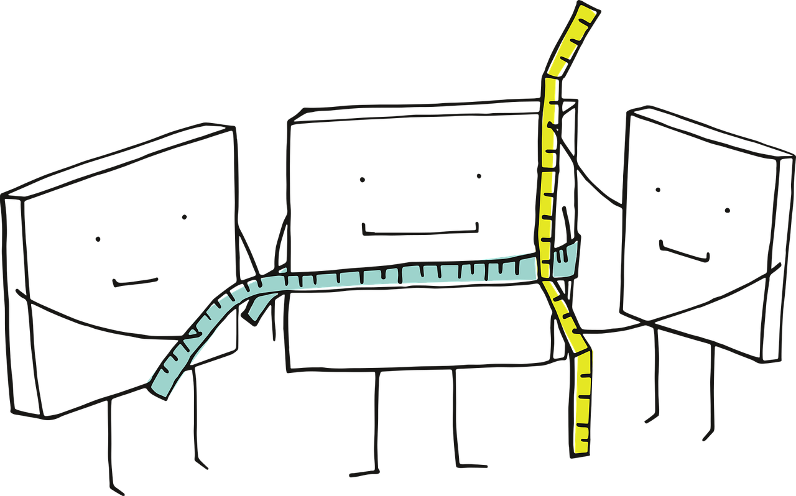
Once we have clearly defined our statistical questions, the next crucial step is to collect the data that will form the basis of our analysis. The way we collect this data is vital because it directly affects the accuracy and reliability of our results:
- For inferential inquiries, we focus on understanding populations or systems that we cannot fully observe. These populations are governed by characteristics (referred to as parameters) that we want to estimate. Because we cannot study every individual in the population or system, we collect a smaller, representative subset called a sample. The method we use to collect this sample (known as sampling) is crucial. A proper sampling method ensures that our sample reflects the larger population or system, allowing us to make accurate and precise generalizations (i.e., inferences) about the entire population or system. After collecting the sample, it is common practice to randomly split the data into training and test sets. This split allows us to build and assess our models, ensuring that the findings are robust and not overly tailored to the specific data at hand.
- For predictive inquiries, our goal is often to use existing data to make predictions about future events or outcomes. In these cases, we usually work with large datasets (databases) that have already been collected. Instead of focusing on whether the data represents a population (as in inferential inquiries), we focus on cleaning and preparing the data so that it can be used to train models that make accurate predictions. Conceptually, after wrangling the data, it may be useful to split it into training, validation, and test sets. However, throughout the main worked examples of this textbook, we will usually rely on training and test sets only, since our emphasis is not on comparing many competing modelling specifications. A fuller workflow with an explicit validation set is deferred to ?sec-validation-workflow.
Tip on sampling techniques!
Careful attention to sampling design is a crucial step in any research aimed at supporting valid regression-based inference. The selection of an appropriate sampling design should be guided by the structural characteristics of the population as well as the specific goals of the analysis. A well-designed sampling strategy enhances the accuracy, precision, and generalizability of parameter estimates derived from regression models, particularly when the intention is to extend model-based conclusions beyond the observed data to the whole population or system.
Below, we summarize some commonly used probability-based sampling designs, each of which has distinct implications for model validity and estimation efficiency:
- Simple random sampling: Every unit in the population has an equal probability of selection. While this method is straightforward to implement and analyze, it may be inefficient or impractical for populations with heterogeneous subgroups.
- Systematic sampling: Sampling occurs at fixed intervals from an ordered list, starting from a randomly chosen point. This design can improve efficiency under certain ordering schemes, but caution is necessary to avoid biases related to periodicity.
- Stratified sampling: The population is divided into mutually exclusive strata based on key characteristics (e.g., age, income, region, etc.). Samples are drawn within each stratum, often in proportion to the strata sizes or based on optimal allocation. This approach increases precision for subgroup estimates and enhances overall model efficiency.
- Cluster sampling: The population is divided into naturally occurring clusters (e.g., households, schools, geographic units, etc.), and entire clusters are sampled randomly. This design is often preferred for cost efficiency, but it typically requires adjustments for intracluster correlation during analysis.
In the context of our regression-based inferential framework, it is necessary to carefully plan data collection and preparation around the sampling strategy. The choice of sampling design can influence not only model estimation but also the interpretation and generalizability of the results. While this textbook does not provide an exhaustive treatment of sampling theory, we recommend Lohr (2021) for an in-depth reference. Their work offers both theoretical insights and applied examples that are highly relevant for data scientists engaged in model-based inference.
Example: Collecting Data for Housing Inference and Predictions
Let us continue with our housing example to illustrate the above concepts:
- Inferential Approach: Suppose we want to understand how the number of bedrooms is associated with the housing sale prices in a city. To do this, we would collect a sample of house sales that accurately represents the city’s entire housing market. For instance, we might use stratified sampling to ensure that we include houses from different neighbourhoods in proportion to how common they are. After collecting the data, we would split it into training and test sets. The training set helps us build our model and estimate the relationship between variables, while the test set allows us to evaluate how well our findings generalize to new data.
- Predictive Approach: If our goal is to predict the selling price of a house based on its features (such as size, number of bedrooms, and location), we would gather a large dataset of recent house sales. This data might come from a real estate database that tracks the details of each sale. Before we can use this data to train a model, we would clean it by filling in any missing information, converting data to a consistent format, and making sure all variables are ready for analysis. In a more general supervised learning workflow, we might then split the data into training, validation, and test sets. However, throughout this textbook, our main predictive examples will usually work with training and test sets only, since the emphasis is not on fine-tuning among several competing model specifications.

As shown in Figure 1.3, the data collection and wrangling stage is fundamental to the workflow. It directly follows the study design and sets the stage for exploratory data analysis.

1.4.3 Exploratory Data Analysis
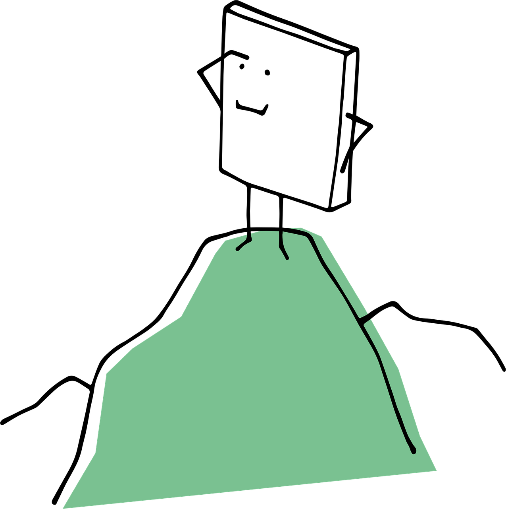
Before diving into data modelling, it is crucial to develop a deep understanding of the relationships between the variables in our training data. This is where the third stage of the data science workflow comes into play: exploratory data analysis (EDA). EDA serves as a vital process that allows us to visualize and summarize our data, uncover patterns, detect anomalies, and test key assumptions that will inform our modelling decisions. Our structured approach to EDA is visually summarized in Figure 1.4, which shows the sequential steps from variable classification to the delivery of exploratory insights.

As indicated above, the first step in EDA is to classify our variables according to their types. This classification is essential because it guides our choice of analysis techniques and models. Specifically, we need to determine whether each variable is discrete or continuous, and whether it has any specific characteristics such as being bounded or unbounded.
-
Response (i.e., the \(Y\)):
- Determine if the response variable is discrete (e.g., binary, count-based, categorical) or continuous.
- If it is continuous, let us consider whether it is bounded (e.g., percentages that range between \(0\) and \(100\)) or unbounded (e.g., a variable like company profits/losses that can take on a wide range of values).
-
Regressors (i.e., the \(x\)s):
- For each regressor, we must identify whether it is discrete or continuous.
- If a regressor is discrete, let us classify it further as binary, count-based, or categorical.
- If a regressor is continuous, let us determine whether it is bounded or unbounded.
This classification scheme helps us select the appropriate visualization and statistical methods for our analysis, as different variable types often need different approaches. It ensures that we are well-equipped to make the right choices in our analyses.
After classifying your variables, the next step is to create visualizations and calculate descriptive statistics using our training data. This involves coding plots that can reveal the underlying distribution of each variable and the relationships between them. For instance, we might create histograms to visualize distributions, scatter plots to explore relationships between continuous variables, and box plots to compare discrete and categorical variables against a continuous variable.
Alongside these visualizations, it is important to calculate key descriptive statistics such as the mean, median, and standard deviation if our variables are numeric. These statistics provide a summary of our data, offering insights into central tendency and variability. We might also use a correlation matrix to assess the strength of relationships between continuous variables.
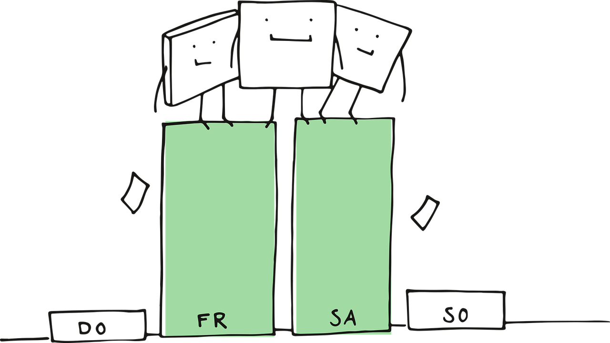
Once we have generated these plots and statistics, they should be displayed in a clear and logical manner. The goal here is to interpret the data and draw preliminary conclusions about the relationships between the observed variables. Presenting these findings effectively helps to uncover key descriptive insights and prepares you for the subsequent modelling stage. Finally, the insights gained from our EDA must be clearly articulated. This involves summarizing the key findings and considering their implications for the next stage of the workflow—data modelling. Observing patterns, correlations, and potential outliers in this stage will inform your modelling approach and ensure that it is grounded in a thorough and informed analysis.
Heads-up on the use of EDA to deliver inferential conclusions!
EDA plays a critical role in uncovering patterns, detecting anomalies, and generating hypotheses. However, it is important to emphasize that the results of EDA should not be generalized beyond the specific sample data being analyzed. EDA is inherently descriptive and focused on the observed sample, and it is not intended to support inferential claims about larger populations. The insights gained from EDA are contingent on the observed sample and may not accurately reflect systematic relationships within the broader population. Nevertheless, EDA can provide valuable information to inform our modelling decisions.
Generalizing findings to a larger population requires formal statistical inference, which takes into account sampling variability, model uncertainty, and the precision of estimates. This is particularly important in regression analysis, where extending patterns observed in a sample to the wider population needs rigorous modelling assumptions, estimation procedures, and a quantification of uncertainty. Treating EDA findings as if they were inferential conclusions can lead to misleading interpretations throughout our data science workflow.
Example: EDA for Housing Data
To illustrate the EDA process, we will follow it within the context of the housing example used in the previous two workflow stages, utilizing simulated data. Suppose we have a sample of \(n = 2,000\) houses drawn from various Canadian cities through cluster sampling. As shown in Table 1.1, our earlier inferential and predictive inquiries focus on housing sale price in CAD as our response variable in a regression context. Note that this numeric response cannot be negative, which classifies it as positively unbounded. Additionally, Table 1.1 provides the relevant details for the regressors in this case: the number of bedrooms, square footage, neighbourhood type, and proximity to schools. Note that we also indicate the coding names of all the variables involved.
| Variable | Type | Scale | Model Role | Coding Name |
|---|---|---|---|---|
| Housing Sale Price (CAD) | Continuous | Positively unbounded | Response | sale_price |
| Number of Bedrooms | Discrete | Count | Regressor | bedrooms |
| Square Footage | Continuous | Positively unbounded | Regressor | sqft |
| Neighbourhood Type (Rural, Suburban or Urban) | Discrete | Categorical | Regressor | neighbourhood |
| Proximity to Schools (km) | Continuous | Positively unbounded | Regressor | school_distance |
Before continuing with this housing example, let us make a quick note on this textbook’s coding delivery.
Heads-up on coding tabs!
You might be wondering:
Where do we begin with some
RorPythoncode?
It is time to introduce our very first lines of code and provide some explanations about the coding approach in this book. Our goal is to make this book “bilingual,” meaning that all hands-on coding practices can be performed in either R or Python. Whenever we present a specific proof of concept or data modelling exercise, you will find two tabs: one for R and another for Python. We will first show the input code, followed by the output.
With this format, you can choose your coding journey based on your language preferences and interests as you progress throughout the book.
Having clarified the bilingual nature of this book with respect to coding, let us load this sample of \(n = 2,000\) houses in both R and Python. For Python, we will need the {pandas} library. Table 1.2 and Table 1.3 show the first 100 rows of this full dataset and R and Python, respectively.
# Importing library
import pandas as pd
# Loading dataset
housing_data = pd.read_csv("data/housing_data.csv")
# Showing the first 100 houses of the full dataset
print(housing_data.head(100))Tip on this simulated housing data!
The housing_data mentioned above is not an actual dataset; it is a simulated one designed to effectively illustrate our data science workflow in this chapter. This simulated dataset will somehow enable us to meet the assumptions of the chosen model during the data modelling stage outlined in Section 1.4.4. If you would like to learn more about this generative modelling process, you can refer to the provided R script.
Now, we will randomly split the sampled data into training and testing sets for both inferential and predictive inquiries. Specifically, 20% of the data will be allocated to the training set, while the remaining 80% will serve as the testing set. Although we formally introduced the idea of a validation set earlier in this chapter, we will not create one for this housing example.
Tip on why we will not use validation sets in this housing example!
Even though validation sets are an important part of a broader supervised learning framework, we will not use one in this chapter’s housing example or in the main worked examples that follow throughout the textbook. The reason is that our pedagogical focus is not on model selection across competing modelling specifications. Rather, we aim to show how a regression analysis proceeds through the data science workflow once an appropriate modelling strategy has already been identified for the response type and the inquiry of interest.
Accordingly, the housing example in this chapter uses a training set to support exploratory data analysis, estimation, and diagnostics, and a test set to support final assessment and, when relevant, protection against double dipping. If you would like to see the same housing dataset used in a fuller predictive workflow with an explicit validation set, a dedicated appendix will be provided later in ?sec-validation-workflow.
Now, the below codes do the following:
-
R: The code in Listing 1.1 executes an 80/20 random split of thehousing_datadataset using the {rsample} package (Frick et al. 2025). Theset.seed()function ensures reproducibility, whileinitial_split()partitions the data into training and testing subsets. The resulting split object is then passed totraining()andtesting()to extract the corresponding datasets. A sanity check follows, wheredim()andnrow()are used to inspect the shapes of each subset and to compute their observed proportions, confirming that the split aligns with the intended allocation. -
Python: The code in Listing 1.2 performs an analogous 80/20 partition ofhousing_datausingtrain_test_split()from {scikit-learn} (Pedregosa et al. 2011), withrandom_stateensuring reproducibility. The function returns the training and testing subsets directly. A subsequent sanity check uses.shapeandlen()to inspect the size of each subset and to verify the observed proportions of the split, ensuring that the partitioning matches the expected configuration before proceeding with further modelling steps. Note that we also use the {numpy} library (Harris et al. 2020).
Heads-up on the different training and testing sets obtained via R and Python!
It turns out that both the {rsample} package in R and {scikit-learn} in Python utilize different pseudo-random number generators. As a result, they produce different training and testing data splits, even when using the same seed values.
# Loading library
library(rsample)
# Seed for reproducibility
set.seed(123)
# Randomly splitting into training and testing sets
housing_data_splitting <- initial_split(housing_data,
prop = 0.2
)
# Assigning data points to training and testing sets
training_data <- training(housing_data_splitting)
testing_data <- testing(housing_data_splitting)
# Sanity checks
n_total <- nrow(housing_data)
n_train <- nrow(training_data)
n_test <- nrow(testing_data)
cat(sprintf(
"Training shape: %d %d\nTesting shape: %d %d\n\nTraining proportion: %.3f\nTesting proportion: %.3f\n",
nrow(training_data), ncol(training_data),
nrow(testing_data), ncol(testing_data),
n_train / n_total,
n_test / n_total
))Training shape: 400 5
Testing shape: 1600 5
Training proportion: 0.200
Testing proportion: 0.800# Importing libraries
from sklearn.model_selection import train_test_split
import numpy as np
# Seed for reproducibility
random_state = 123
# Randomly splitting into training and testing sets
training_data, testing_data = train_test_split(
housing_data,
test_size=0.8,
random_state=random_state
)
# Sanity checks
n_total = len(housing_data)
n_train = len(training_data)
n_test = len(testing_data)
print(
f"Training shape: {training_data.shape}\n"
f"Testing shape: {testing_data.shape}\n\n"
f"Training proportion: {n_train/n_total:.3f}\n"
f"Testing proportion: {n_test/n_total:.3f}"
)Training shape: (400, 5)
Testing shape: (1600, 5)
Training proportion: 0.200
Testing proportion: 0.800In addition, the code below displays the first 100 rows of our training data, which is a subset of size equal to 400 data points.
# Showing the first 100 houses of the training set
head(training_data, n = 100)# Showing the first 100 houses of the training set
print(training_data.head(100))Due to the use of different pseudo-random number generators for data splitting in R and Python, the training_data in the tables above differs. Now, let us make a necessary clarification about why we need to split the data in inferential inquiries.
Heads-up on data splitting for inferential inquiries!
In machine learning, data splitting is a foundational practice designed to prevent data leakage in predictive inquiries. However, you may wonder:
Why should we also split the data for inferential inquiries?
In the context of statistical inference, especially when making claims about population parameters, data splitting plays a different but important role: it helps prevent double dipping. Double dipping refers to the misuse of the same data for both exploring hypotheses (as in EDA) and formally testing those hypotheses. This practice undermines the validity of inferential claims by increasing the probability of Type I errors—incorrectly rejecting the null hypothesis \(H_0\) when it is actually true for the population under study.
To illustrate this, consider conducting a one-sample \(t\)-test in a double-dipping scenario for a population mean \(\mu\). Suppose we first observe a sample mean of \(\bar{x} = 9.5\) (i.e., an EDA summary statistic), and then decide to test the null hypothesis
\[\text{$H_0$: } \mu \geq 10\]
against the alternative hypothesis
\[\text{$H_1$: } \mu < 10,\]
after performing EDA on the same data. If we proceed with the formal \(t\)-test using that same data, we are essentially tailoring the hypothesis to fit our sample. Empirical simulations can show that such practices lead to inflated false positive rates, which threaten the reproducibility and integrity of statistical inference.
Unlike predictive modelling, data splitting is not a routine practice in statistical inference. However, it becomes relevant when the line between exploration and formal testing is blurred. For more information on double dipping in statistical inference, Chapter 6 of Reinhart (2015) offers in-depth insights and some real-life examples.
After classifying the variables and splitting our data, we will move on to coding the plots and calculating the summary statistics.
Heads-up on the use of R-generated training and testing for the rest of the data science workflow!
We have clarified that both R and Python produce different random data splits, even when using the same seeds. Therefore, in all the following Python code snippets related to this housing price case, we will be utilizing both the training and testing sets generated by the R-based data splitting. This approach ensures consistency in our coding outputs.
If you want to reproduce all these outputs in Python using Quarto (Allaire et al. 2025), while utilizing the R-generated sets, you can import these datasets from the R environment using the {reticulate} package (Ushey, Allaire, and Tang 2025).
As we move forward, we provide a list of plots and summary statistics, along with their corresponding EDA outputs and interpretations. This is based on our training data, which has a size of 400. Note that we are not providing the code to generate all of the EDA output directly (though you can find the R source here). However, subsequent chapters will include both R and Python code snippets to generate the corresponding EDA insights. Below is the list:
- A histogram of housing sale prices, as in Figure 1.5, shows the response’s distribution and helps identify any outliers. The training set reveals a fairly symmetric distribution of sale prices, with a noticeable concentration of sales between \(\$200,000\) and \(\$400,000\). However, there are a few outliers. Even with just 20% of the total data, this plot provides valuable graphical insights into central tendency and variability.
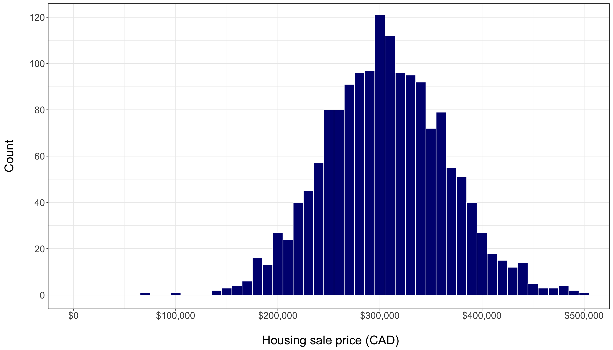
- Side-by-side jitter plots, as in Figure 1.6, visualize the distribution of sale prices across different bedroom counts, highlighting spread. Overall, these plots indicate a positive association between the number of bedrooms and housing sale price. Note that the average price (represented by red diamonds) tends to increase with the addition of more bedrooms. The training set predominantly has homes with 3 to 5 bedrooms, and there are some high-priced outliers present even among mid-sized homes.
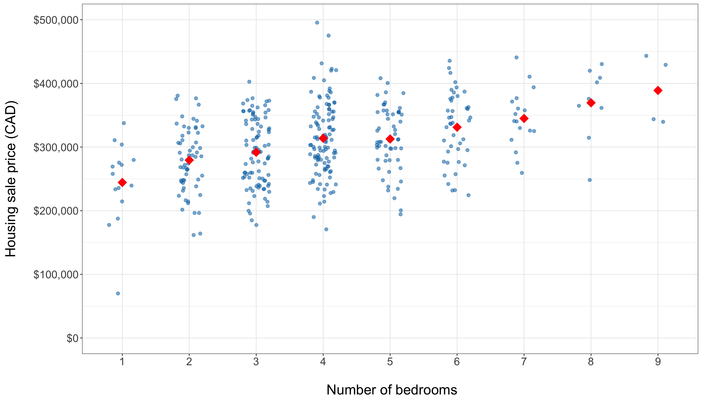
- A scatter plot displaying the relationship between square footage and housing sale price, as in Figure 1.7, illustrates how these two continuous variables interact. There is a clear upward trend in the training data, indicated by the fitted solid red line of the simple linear regression (which is a preliminary regression fit used by different plotting tools in
RorPython, via the model from Chapter 3). Although the variability increases with larger square footage, the overall positive linear pattern is still clear.
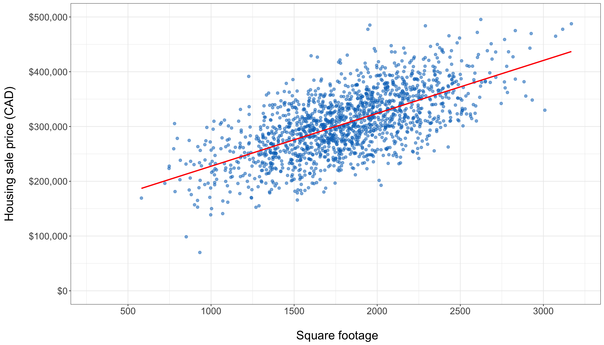
- Side-by-side box plots, as in Figure 1.8, are used to compare housing sale prices across different types of neighbourhoods, highlighting variations in median prices. The training data reveals neighbourhood-specific price patterns: urban homes tend to have higher prices, while rural homes are generally less expensive. However, from a graphical perspective, we do not observe major differences in price spreads between these types of neighbourhoods.
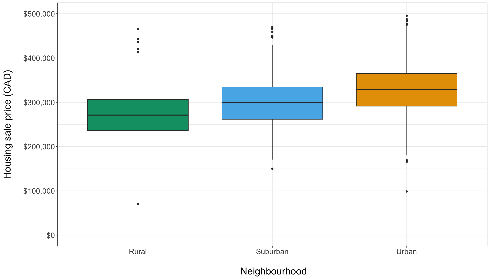
- The scatter plot showing the relationship between proximity to schools and housing sale price, as in Figure 1.9, reveals an almost flat trend in the training data. This observation is supported by the fitted solid red line of the simple linear regression (same model from Chapter 3), indicating a weak graphical relationship between these two variables.
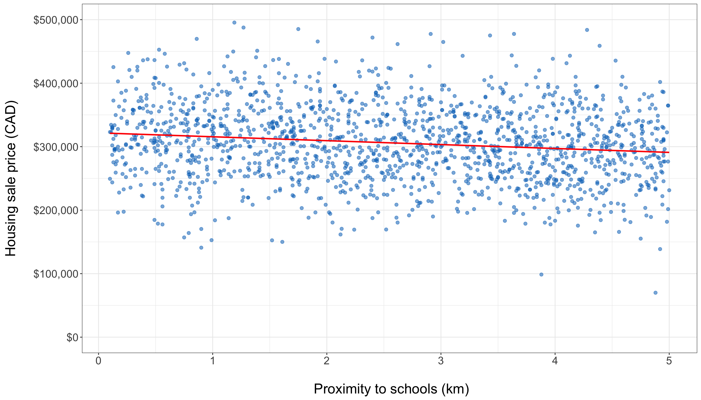
- Descriptive statistics from Table 1.6, such as the mean and standard deviation, summarize continuous variables. In addition, a Pearson correlation matrix from Table 1.7 numerically assesses the relationships between these variables. Note that square footage is positively correlated with housing sale price, while proximity to schools has a negative association.
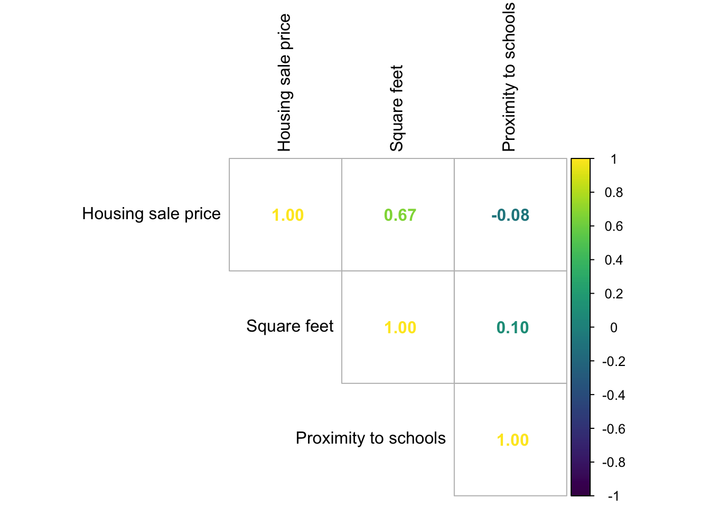
In displaying and interpreting results, the plots and statistics will guide us in understanding the data. In this specific example, these exploratory insights help identify key factors, such as square footage and neighbourhood type, that influence housing sale prices. They also highlight any outliers that may need further attention during modelling. By following this EDA process, we will establish a solid descriptive foundation for effective data modelling, ensuring that the key variables and their relationships are well understood.
1.4.4 Data Modelling
The previous EDA provides a solid descriptive foundation regarding the identified types of data for our response variable and regressors, as well as their graphical relationships. This information will guide us in selecting a suitable regression model based on the following factors:
- The response type (e.g., whether it is continuous, bounded or unbounded, count, binary, categorical, etc.).
- The flexibility of the chosen model (e.g., its ability to handle extreme values or outliers).
- Its interpretability (i.e., can we effectively communicate our statistical findings to stakeholders?).
In statistical literature, we often encounter classical linear regression models, such as the OLS model discussed in Chapter 3. This model enables us to explain our continuous response variable of interest, denoted as a random variable \(Y\), in the form of a linear combination of a specified set of regressors (the observed \(x\) variables). A linear combination is essentially an additive relationship where \(Y\) depends on the \(x\) variables, which are multiplied by regression coefficients. Alternatively, for both continuous and discrete response variables, we can utilize more complex models that establish a non-linear relationship between \(Y\) and the \(x\) variables. Some of these models are referred to as generalized linear models (GLMs).
For this workflow stage, whether using a classical linear regression model like OLS or a more complex one such as a GLM (a type of model that is covered in this book along other models that explain survival time responses), we need to establish modelling equations that align with both theoretical and data-driven considerations. These modelling equations will need definitions for the parameters, link functions (if applicable as in the case of GLMs), and any relevant distributional assumptions based on the chosen model. Then, once we have defined our modelling equation(s), we can proceed to the estimation stage. Note that this data modelling stage is iterative, as illustrated in Figure 1.10. The process will depend heavily on the results obtained during the goodness-of-fit stage.

Example: OLS Regression Model for Housing Data
Let us continue with our housing example, where our response of interest is the sale price of a house in CAD, as shown in Table 1.1. During the study design stage outlined in Section 1.4.1, we identified two key inquiries: inferential and predictive. The inferential inquiry focuses on understanding the statistical associations between the sale price and other variables, such as square footage, number of bedrooms, and proximity to schools. In contrast, the predictive inquiry involves fitting a suitable model to obtain estimates that will enable us to predict housing sale prices based on these same features.
Before selecting a model, we need to define our mathematical notation for all the variables involved. Let \(Y_i\) represent the continuous sale price of the \(i\)th house in CAD from a dataset of size \(n\) used to estimate a chosen model in general, where \(i = 1, 2, \ldots, n\). For the observed explanatory variables, we define the following:
- \(x_{i, 1}\) is the number of bedrooms in the \(i\)th house, which is a count-type variable.
- \(x_{i, 2}\) is the continuous square footage of the \(i\)th house.
- \(x_{i, 3}\) is the continuous proximity to schools for the \(i\)th house in km.
To mathematically represent the categorical and nominal neighbourhood types to which the \(i\)th house could belong, we need more than one variable \(x\). In regression analysis involving nominal explanatory variables, we typically use binary dummy variables. In this example, these dummy variables will help us identify the neighbourhood type of each house. Generally, for a nominal variable with \(u\) categories, we need to define \(u - 1\) dummy variables, as shown in Table 1.8.
| Level | \(x_{i, 1}\) | \(x_{i, 2}\) | \(\cdots\) | \(x_{i, u - 1}\) |
|---|---|---|---|---|
| \(1\) | \(0\) | \(0\) | \(\cdots\) | \(0\) |
| \(2\) | \(1\) | \(0\) | \(\cdots\) | \(0\) |
| \(\vdots\) | \(\vdots\) | \(\vdots\) | \(\ddots\) | \(\vdots\) |
| \(u\) | \(0\) | \(0\) | \(\cdots\) | \(1\) |
Heads-up on how to use dummy variables!
In Table 1.8, note that level \(1\) is considered the baseline (reference) level. If the \(i\)th observation belongs to level \(1\), then all the dummy variables \(x_{i, 1}, \ldots, x_{i, u - 1}\) will take the value of \(0\). The choice of baseline affects how we interpret the estimated regression coefficients later in our data science workflow.
Table 1.9 shows the dummy variable arrangement for our housing example regarding the neighbourhood type where rural is the baseline level. Since we have three levels (rural, suburban, and urban), our chosen model will have two binary dummy variables for the \(i\)th house:
\[ x_{i, 4} = \begin{cases} 1 \quad \text{if the house belongs to a suburban neighbourhood},\\ 0 \quad \text{otherwise}; \end{cases} \tag{1.2}\]
and
\[ x_{i, 5} = \begin{cases} 1 \quad \text{if the house belongs to an urban neighbourhood},\\ 0 \quad \text{otherwise}. \end{cases} \tag{1.3}\]
| Level | \(x_{i,4}\) | \(x_{i,5}\) |
|---|---|---|
| \(\text{Rural}\) | \(0\) | \(0\) |
| \(\text{Suburban}\) | \(1\) | \(0\) |
| \(\text{Urban}\) | \(0\) | \(1\) |
With the mathematical notation for our data variables defined, it is time to choose a suitable regression model to address our inferential and predictive inquiries. Since the nature of \(Y_i\) is continuous, we may consider using OLS regression, as outlined in Chapter 3, although there is an important distributional matter to be highlighted at the end of this section. OLS is typically the first regression model to explore because it is a widely used model that is easy to understand and communicate to stakeholders. We refer to OLS as a parametric model, a distinction that other models, such as the GLMs, also have. Let us define this type of model below.
Definition of parametric model
A parametric model is a type of model that assumes a specific functional relationship between the response variable of interest, \(Y\), which is considered a random variable, and one or more observed explanatory variables, \(x\). This relationship is characterized by a finite set of parameters and can often be expressed as a linear combination of the observed \(x\) variables, which favours interpretability.
Moreover, since \(Y\) is a random variable, there is room to make further assumptions on it in the form of a probability distribution, independence or even homoscedasticity (the condition where all responses in the population have the same variance). It is essential to test these assumptions after fitting this type of models, as any deviations may result in misleading or biased estimates, predictions, and inferential conclusions.
A parametric model, as previously mentioned, allows us to prioritize interpretability in our regression analysis, and OLS offers this advantageous characteristic. The classical setup of OLS describes the relationship between the response variable \(Y\) and the observed variables \(x\) as a linear combination, represented by the following equation for \(i = 1, 2, \ldots, n\) in this housing price example:
\[ Y_i = \underbrace{\beta_0 + \beta_1 x_{i, 1} + \beta_2 x_{i, 2} + \beta_3 x_{i, 3} + \beta_4 x_{i, 4} + \beta_5 x_{i, 5}}_{\text{Systematic Component}} + \underbrace{\varepsilon_i.}_{\substack{\text{Random} \\ \text{Component}}} \tag{1.4}\]
Equation 1.4 indicates two important components in this regression model on its righ-hand side:
- Systematic Component: This component includes six fixed and unknown regression parameters (\(\beta_0\), \(\beta_1\), \(\beta_2\), \(\beta_3\), \(\beta_4\), and \(\beta_5\)) that we will estimate in the next stage using our training data. Note that this component represents the expected value of the response variable \(Y\), conditioned on the observed values of the regressors and it is also the result of the assumptions on the random component below:
\[ \begin{align*} \mathbb{E}(Y_i \mid x_{i, 1}, \ldots, x_{i, 5}) &= \beta_0 + \beta_1 x_{i, 1} + \beta_2 x_{i, 2} + \\ & \qquad \beta_3 x_{i, 3} + \beta_4 x_{i, 4} + \beta_5 x_{i, 5}. \end{align*} \tag{1.5}\]
- Random Component: For the \(i\)th observation, this is denoted by the random variable \(\varepsilon_i\). This component measures how much the observed value of the response may deviate from its conditioned mean, and it is considered random noise. Since \(\varepsilon_i\) is assumed to be a random variable and is added to a fixed systematic component on the right-hand side of Equation 1.4, this aligns with the notion that \(Y_i\) is treated as a random variable on the left-hand side.
We also need to state the modelling assumptions for this OLS case:
- Each observed regressor on the right-hand side of the Equation 1.4 has an associated regression coefficient \(\beta_j\) for \(j = 1, 2, \ldots, 5\) (these were already indicated as part of the regression parameters). These coefficients represent the expected change in the response variable when a specific regressor \(x_{i,j}\) changes by one unit. Additionally, the regression parameter \(\beta_0\) serves as the intercept of this linear model, representing the mean of the response when all five regressors are equal to zero. This entire arrangement allows for a more interpretable model and aids in addressing our inferential inquiry.
- To pave the way for the corresponding inferential test in OLS, the error term \(\varepsilon_i\) is typically assumed to be normally distributed with a mean of zero (this mean is consistent with the conditioned expected value outlined in Equation 1.5). Additionally, it is assumed that the variance is constant across observations, referred to as the so-called homoscedasticity, and denoted as \(\sigma^2\) (another regression parameter fixed and unknown to estimate via the training set). Furthermore, all error terms \(\varepsilon_i\) are assumed to be statistically independent. These assumptions can be mathematically represented as follows:
\[ \begin{gather*} \mathbb{E}(\varepsilon_i) = 0 \\ \text{Var}(\varepsilon_i) = \sigma^2 \\ \varepsilon_i \sim \text{Normal}(0, \sigma^2) \\ \varepsilon_i \perp \!\!\! \perp \varepsilon_k \; \; \; \; \text{for} \; i \neq k \; \; \; \; \text{(independence)}. \end{gather*} \]
Heads-up on the use of an alternative systematic component!
The systematic component in Equation 1.4 is considered linear with respect to the regression parameters \(\beta_1\), \(\beta_2\), \(\beta_3\), \(\beta_4\), and \(\beta_5\). Therefore, we can model the regressors using mathematical transformations, such as the following polynomial:
\[ Y_i = \beta_0 + \beta_1 x_{i, 1} + \beta_2 x_{i, 2}^2 + \beta_3 x_{i, 3}^3 + \beta_4 x_{i, 4} + \beta_5 x_{i, 5} + \varepsilon_i. \]
This linearity condition on the parameters makes our OLS model flexible enough to improve accuracy in predictive inquiries. However, we would sacrifice some interpretability for inferential inquiries.
Before we conclude this stage, note that Chapter 2 will explore the fundamentals of probability and statistical inference in greater depth. This exploration will enhance our understanding of the modelling assumptions underlying the regression models discussed throughout this book. Additionally, we will broaden our perspective on regression to consider more appropriate models for nonnegative responses, instead of relying on OLS with the assumption of an unbounded, normally distributed response which might be unrealistic for nonnegative housing prices (and still a mild violation on our response assumptions, given that the housing prices appear to have a bell-shaped distribution as shown in Figure 1.5).
1.4.5 Estimation
Based on the data we have and our EDA, defining a suitable regression model (along with the equations that relate the response variable \(Y\) to the regressors \(x\) and the corresponding regression parameters) is an essential step in our data science workflow. This leads us to the next stage: estimation. In this stage, we aim to obtain what we refer to as modelling estimates using our training dataset. The method we choose for estimation largely depends on the specific regression model we adopt to address our inquiries.
In all core chapters of this book, except for Chapter 3, the default method we will use is maximum likelihood estimation (MLE) (the fundamental insights are provided in Section 2.3). Regardless of the chosen estimation method, these estimates (denoted with a hat notation) will allow us to quantify the association (or causation, if applicable) between the outcome variable \(Y\) and the \(x\) regressors. This is particularly relevant in inferential inquiries, provided that the results are statistically significant, as discussed in Section 1.4.7.
As illustrated in Figure 1.11, the data modelling stage will yield the necessary components for this phase in the form of a suitable model, modelling equation, and regression parameters. We will then use the corresponding R or Python fitting function, where the inputs will include the coded modelling equation (which contains the variables of interest: the outcome and the regressors) along with the training set. These fitting functions serve the following purposes:
- In most regression models, obtaining analytical (i.e., exact) solutions for our parameter estimates is not feasible. Specifically, MLE can employ an optimization method such as Newton-Raphson or Iteratively Reweighted Least-squares (IRLS), as we aim to maximize the log-likelihood function that involves our observed data and unknown parameters. This function is numerically optimized to estimate these parameters. More information regarding numerical optimization in MLE, including a brief discussion of the Newton-Raphson method, can be found in Section 2.3.8. Throughout the core chapters of the book, we will delve deeper into the fundamentals of IRLS.
- Once the estimation process has been completed using the appropriate log-likelihood function and numerical optimization method (i.e., when the method has converged to an optimal solution), we will obtain outputs that include parameter estimates. These parameter estimates will be used in the subsequent workflow stage, called goodness of fit, to statistically assess whether our fitted model satisfies the assumptions we made about our data in the previous modelling stage.

Example: Fitting the OLS Regression Model for Housing Data
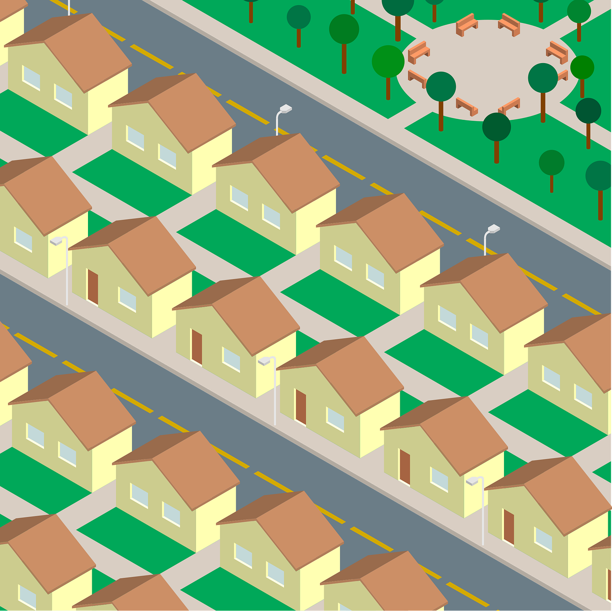
Let us examine the training_data for this housing case, which consists of 400 observations. As shown in Table 1.1, for the \(i\)th house, we have different regressors: the number of bedrooms (bedrooms, denoted as \(x_{i, 1}\)), the continuous square footage (sqft, denoted as \(x_{i, 2}\)), the continuous proximity to schools in km (school_distance, denoted as \(x_{i, 3}\)), and neighborhood type (represented by dummy variables \(x_{i, 4}\) as in Equation 1.2 and \(x_{i, 5}\) as in Equation 1.3, where rural is the baseline). The response variable we are interested in is the continuous housing sale price in CAD (sale price, denoted as \(Y_i\)). Additionally, we will revisit our modelling approach as outlined in Equation 1.4:
\[ Y_i = \beta_0 + \beta_1 x_{i, 1} + \beta_2 x_{i, 2} + \beta_3 x_{i, 3} + \beta_4 x_{i, 4} + \beta_5 x_{i, 5} + \varepsilon_i, \]
where \(\beta_0\), \(\beta_1\), \(\beta_2\), \(\beta_3\), \(\beta_4\), and \(\beta_5\) represent the unknown regression parameters to be estimated to address our inferential and predictive inquiries. Additionally, we have another parameter to estimate, that is the common variance between the random components of each observation (\(i = 1, 2, \ldots, n\)):
\[ \text{Var}(\varepsilon_i) = \sigma^2. \]
Having set up the coding starting point for this estimation, we need to use the corresponding fitting functions to find \(\hat{\beta}_0\), \(\hat{\beta}_1\), \(\hat{\beta}_2\), \(\hat{\beta}_3\), \(\hat{\beta}_4\), \(\hat{\beta}_5\), \(\hat{\sigma}^2\) via OLS regression (as we already decided in the data modelling stage). Therefore, let us the following function and libraries:
-
R: We fit an OLS model via thelm()function with the responsesale_priceand four explanatory variables:bedrooms,sqft,school_distance, andneighbourhoodvia thetraining_data. The resulting model object, stored intraining_OLS_model, contains the estimated parameters and related statistics (which will be explained in the results stage via the testing set). The output shows the systematic component used (i.e.,formula) along with the estimated regression parameters \(\hat{\beta}_0, \hat{\beta}_1, \dots, \hat{\beta}_5\). -
Python: This code fits the same OLS model using the {statsmodels} (Seabold and Perktold 2010) library. It begins by specifying and fitting this OLS model throughsmf.ols(), which regressessale_pricebased on four explanatory variables:bedrooms,sqft,school_distance, andneighbourhoodvia thetraining_data. The.fit()method estimates the regression coefficients and computes related statistics. Then, we print the estimated regression parameters \(\hat{\beta}_0, \hat{\beta}_1, \dots, \hat{\beta}_5\).
# To import R-generated datasets to Python environment
library(reticulate)
# Fitting the OLS model
training_OLS_model <- lm(
formula = sale_price ~ bedrooms + sqft +
school_distance + neighbourhood,
data = training_data
)
training_OLS_model
Call:
lm(formula = sale_price ~ bedrooms + sqft + school_distance +
neighbourhood, data = training_data)
Coefficients:
(Intercept) bedrooms sqft
53948.21 14107.19 99.01
school_distance neighbourhoodSuburban neighbourhoodUrban
-6963.93 26908.04 60509.46 # Importing libraries
import statsmodels.formula.api as smf
# Importing R-generated training set via R library reticulate
training_data = r.training_data
# Fitting the OLS model
training_OLS_model = smf.ols(
formula="sale_price ~ bedrooms + sqft + school_distance + neighbourhood",
data=training_data
).fit()
training_OLS_model.paramsIntercept 53948.206229
neighbourhood[T.Suburban] 26908.043443
neighbourhood[T.Urban] 60509.459093
bedrooms 14107.194703
sqft 99.006944
school_distance -6963.930281
dtype: float64Heads-up on the OLS analytical estimates!
Since the inferential inquiry in this example aims to understand the statistical associations between housing sale prices and their explanatory variables, while the predictive inquiry seeks to fit a suitable model that allows us to predict housing sale prices based on these same features, we might be tempted to use training_OLS_model to address both inquiries right away. However, according to our data science workflow, these analyses should be conducted during the results stage, after we have completed model diagnostic checks. For now, we will use the training_data and training_OLS_model to perform this corresponding goodness of fit in the next stage.
1.4.6 Goodness of Fit
Once we have estimated our regression model on the training data, we move into goodness of fit. Think of this stage as quality control for the model we just trained: we check whether the fitted model behaves the way our data modelling stage said it should. That matters because every model we write down is an abstraction of reality: a simplified story about how the observed data could plausibly be generated in the population or system we care about. In regression analysis, that story is encoded by a specific modelling choice like OLS (or a GLM, for instance), together with its parametrization and distributional assumptions. Goodness-of-fit checks help us answer a practical question:
Is this modelling story compatible with what we actually see in the data and enough that we can trust the inferences and predictions we plan to report?
In statistical terms, goodness of fit implies to execute a stress testing of our fitted model against the assumptions we set up in the data modelling stage. That said, this testing does not usually boil down to a single plot or hypothesis testing. In fact, it comes as a bundle of checks that prove whether our fitted model is suitable for the class of inquiry we are dealing:
- Inferential goodness of fit: Here, our stress-testing focuses on whether the fitted model’s assumptions are plausible enough to support trustworthy claims about association. In regression, this matters because our hypothesis tests (i.e., is this coefficient statistically different from zero?) and confidence intervals (CIs) only work as advertised if the model’s distributional assumptions are roughly true. If key assumptions are notably violated (for example, in OLS: non-constant residual variance, clear residual structure suggesting dependence or missing structure, or a small number of influential observations dominating the fit), then the model-based standard errors (SEs, to be defined in Section 2.2.7) can be biased upward or downward. That distortion propagates directly to \(p\)-values and CIs, so we may end up declaring evidence of association (or missing it) for the wrong reason: our uncertainty calculations are miscalibrated. In practice, inferential goodness-of-fit checks are about protecting the reliability of uncertainty statements so that when we report an association, we can defend not only the point estimate, but also the uncertainty attached to it.
Tip on causal inference!
Even when a regression coefficient is statistically different from zero, that statement is still about association under the corrresponding model. If our goal is a causal claim, we woul need additional assumptions justified by the study design (e.g., identification, confounding control, and how the data were collected). Goodness-of-fit diagnostics help with the regression model’s validity, but they do not, by themselves, turn association into causation. For deeper information about causal inference, you can consult the book by Hernán (2024).
- Predictive goodness of fit: Here, our stress-testing asks whether the model’s predictive behaviour is stable beyond the training sample. The key idea is diagnostic: we are checking for warning signs like overfitting, data leakage, or systematic prediction failures. Predictive goodness-of-fit checks help us decide whether the current modelling choice is adequate for generalization, or whether we should revisit the data modelling stage (adding or removing features, feature transformations, feature interactions, or even a different model class) before we move on to presenting results as dictated by our data science workflow.

A helpful way to think about goodness of fit is how the data science workflow shows it in Figure 1.12. Righ after our data modelling and estimation stages, we perform the model diagnostics via the corresponding estimated regression model on the training set. With the results of these model diagnostics, we must face the question on whether this estimated model fulfils our data data assumptions. If the answer is no, then we must go back to the data modelling stage and redefine our regression strategy. Otherwise, we can proceed to the results stage. Roughly speaking, the goodness of fit is our formal gate between having a fitted model and being allowed to use it confidently either for inferential or predictive purposes.
Note that a practical and general process to run the model diagnostics, depicted in Figure 1.12, is as follows:
Confirm the workflow flavour (i.e., inferential or predictive). Decide what will drive decisions to move on to the results stage or go back to the data modelling stage: trustworthy uncertainty for interpretation (inferential) and/or generalization to new cases (predictive). Often, we check both, but one will dominate how strict we are about modelling revisions.
-
Diagnose the systematic component (i.e., the signal provided by the regression parameters and features). We need to confirm whether our fitted model is capturing the main pattern the modelling stage promised:
- For OLS and GLMs: We must look for any structure the systematic component might have missed such as nonlinearity, interactions, or missing explanatory variables.
- For survival models: We must check whether key structural assumptions (e.g., proportional hazards if using Cox regression as in Chapter 7) are suitable for our survival data.
-
Diagnose the stochastic structure (i.e., the random component). Here, we check whether the random component actually behaves the way we set up our distributional assumptions:
- For OLS: We must check for normality, constant variance, and lack of patterns in the observed residuals.
- For GLMs: We need to check the relationship between the mean and variance of our response (i.e., check for equidispersion, overdispersion or underdispersion), and whether the chose distribution family and link function are suitable for our observed data and fitted model.
- For survival models: We have to check for censoring patterns and model-specific residual diagnostics.
Check for leverage and influential data points. Identify whether any subset of observations are driving the model fitting. This is a stability check of whether the results would change if these observations were not present.
-
Evaluate predictive behaviour (as a diagnostic). If prediction is part of our inquiries, we can use the in-sample predictions (coming from the training set along with the fitted model) to check the corresponding performance. In the main worked examples of this textbook, this diagnostic perspective will be complemented later by a test-set assessment rather than by a separate validation-set comparison, since our goal is not to run a model-selection competition across several candidate specifications. According to our type of response, we might use the following metrics:
- Continuous: \(R^2\) and adjusted \(R^2\) for OLS or deviance in GLMs.
- Binary or Count: Deviance.
- Survival: Time-dependent calibration/discrimination tools appropriate to censoring.
Decide, then iterate like the diagram in Figure 1.12 says. If the above diagnostics point to a real mismatch, we must go back to the data modelling stage and make the corresponding revisions in regards to specification (i.e., adjustments on features, interactions, transformations, etc.), revise the distributional family/link (as in the case of GLMs), revise the survival model structure or revise the uncertainty approach (e.g., robust SEs when appropriate). Only when we have passed our diagnostics, then we can proceed to the results stage.
Heads-up on what the goal of goodness of fit entails!
In many different practical cases, it is possible to have a fitted model with a good predictive performance while being a really poor tool for interpretataion and inference. Conversely, any given model can be a reasonable inferential tool while having a weak predictive performance. Having said all this, we always have to balance out our goodness-of-fit judgment depending on our main inquiries.
Example: Goodness-of-Fit Checks for the OLS Housing Model
We will now proceed to stress-test our training_OLS_model for the housing case. That said, before running diagnostics, let us keep our modelling story front and centre. Recall that in this housing example we had the following inferential and predictive inquiries, respectively:
How does the number of bedrooms affect the price of a house, once we account for other factors?
What would be the predicted price of a rural house with 3,500 square feet and 3 bedrooms located on a block where the closest school is at 2.5 km?
In our housing example, via Equation 1.4, we assumed an OLS regression of the form
\[ Y_i = \underbrace{\beta_0 + \beta_1 x_{i, 1} + \beta_2 x_{i, 2} + \beta_3 x_{i, 3} + \beta_4 x_{i, 4} + \beta_5 x_{i, 5}}_{\text{Systematic Component}} + \underbrace{\varepsilon_i,}_{\text{Random Component}} \]
together with the following key assumptions on the random component:
- Mean zero: This means that \[ \mathbb{E}(\varepsilon_i) = 0, \] so the systematic component truly represents the conditional mean as in Equation 1.5.
- Constant variance (homoscedasticity): This means that \[ \text{Var}(\varepsilon_i) = \sigma^2, \] so the noise level is stable across the range of fitted values.
Definition of fitted value
In a regression model, the fitted value for the \(i\)th observation is the model’s estimate of the conditional mean of the response variable given the \(k\) observed regressors. After estimating the model parameters from the training data, we plug the \(i\)th row of regressor values into the fitted systematic component to obtain
\[ \hat{y}_i = \widehat{\mathbb{E}}\left(Y_i \mid x_{i,1}, \ldots , x_{i,k}\right). \]
- Normality (a requirement for our inferential inquiry): This means that \[ \varepsilon_i \sim \text{Normal}(0,\sigma^2), \] which supports the usual \(t\)-tests and confidence intervals in the classical OLS toolkit.
- Independence: This means that \[ \varepsilon_i \perp\!\!\!\perp \varepsilon_k \text{ for } i\neq k, \] so we are not unintentionally treating correlated information as if it were multiple independent observations.
Goodness of fit will be where we check whether these above assumptions are reasonable enough for the two goals we stated in our study design: association-focused inference and prediction. Importantly, these checks are not about proving the model is “true” (no statistical model is!), but about verifying that the fitted training_OLS_model is reliable enough that we can trust what we plan to do next:
- For our inferential inquiry, since we want to determine association, model diagnostics will help us assess whether standard errors, confidence intervals, and hypothesis tests are likely to be meaningful in our next workflow stage.
- For our predictive inquiry, which requires forecasting sale prices for unobserved houses, diagnostics will help us assess whether the OLS model is stable, not overly sensitive to a few observations, and not simply fitting noise.
To make this workflow stage repeatable, we will run a small set of diagnostic tools, each of which targets a specific part of the OLS story:
- Residuals versus fitted values asks
Is the mean structure (depicted by the systematic component in Equation 1.4) plausible, or did we miss a pattern (e.g., regressor interactions, changing spread, etc.)?
Definition of residual
A residual is the difference between the observed response variable and its fitted value from the model. For the \(i\)th observation, the residual is
\[ e_i = y_i - \hat{y}_i, \tag{1.6}\]
where \(y_i\) is the observed response variable and \(\hat{y}_i\) is the fitted value.
Residuals measure the part of the response variable that the fitted model did not explain through its systematic component. Many goodness-of-fit diagnostics are built by inspecting whether these residuals behave like the model’s assumed “random noise.”
- QQ-plot of standardized residuals asks
Do residuals look roughly normal (especially in the tails), or are there heavy tails/outliers that can distort inference?
- Shapiro–Wilk test asks
Is there formal statistical evidence that the residuals deviate from normality?
- Breusch–Pagan test asks
Is the variance roughly constant, or does it change systematically across fitted values (i.e., we have heteroscedasticity)?
- Durbin–Watson test asks
Are residuals plausibly independent, or do they show autocorrelation that would undermine our standard errors?
- Variance inflation factors (VIFs) ask
Are predictors strongly collinear, making coefficient uncertainty large and interpretation unstable?
- Cook’s distance asks
Is the fitted model overly driven by a small number of influential observations?
- \(R^2\) and adjusted \(R^2\) evaluate in-sample predictive behaviour.
Table 1.10 summarizes these tools and where they appear in our demo before showing the corresponding plots, tests, and metrics.
| Diagnostic | Purpose | Type | Cross-reference |
|---|---|---|---|
| Residuals versus fitted values plot | Checks whether the mean structure looks plausible and flags changing spread/outliers. | Graphical insight | Figure 1.13 |
| QQ-plot of standardized residuals | Checks whether residuals look approximately Normal for classical OLS inference. | Graphical insight | Figure 1.14 |
| Shapiro–Wilk normality test | Formal test that flags departures from normality in residuals. | Hypothesis testing | Listing 1.5 and Listing 1.6 |
| Studentized Breusch–Pagan test | Test for heteroscedasticity (non-constant residual variance). | Hypothesis testing | Listing 1.7 and Listing 1.8 |
| Durbin–Watson test | Test for autocorrelation in residuals. | Hypothesis testing | Listing 1.9 and Listing 1.10 |
| Variance inflation factors (VIFs) | Flags multicollinearity, which can inflate standard errors and destabilize coefficient interpretation. | Standalone metrics | Listing 1.11 and Listing 1.12 |
| Cook’s distance plot | Flags influential observations that can disproportionately affect coefficient estimates. | Graphical insight | Figure 1.15 |
| \(R^2\) and adjusted \(R^2\) | Summarizes in-sample predictive behaviour; adjusted version penalizes for extra predictors. | Standalone metric | Listing 1.13 and Listing 1.14 |
Heads-up on what a “good fit” entails!
It is possible for a model to have excellent predictive performance while being a poor tool for interpretation (for example, if collinearity makes coefficients unstable). Conversely, a model can be a reasonable inferential summary while being a weak predictor (for example, if it explains average trends but misses important nonlinearities). Always judge goodness of fit relative to the inquiry you are answering!
Note that, as in Section 1.4.3, we are not providing the code to generate all of the plotting output directly (though you can find the R source here). However, subsequent chapters will include both R and Python code snippets to generate graphical insights on goodness of fit.
Now, let us start with the diagnostic plot of residuals versus fitted values from Figure 1.13. Starting with Equation 1.4 from the earlier data modelling step for this housing example, and after fitting the OLS model on the training data, we obtain a fitted value
\[ \hat{y}_i = \hat{\beta}_0 + \hat{\beta}_1 x_{i, 1} + \hat{\beta}_2 x_{i, 2} + \hat{\beta}_3 x_{i, 3} + \hat{\beta}_4 x_{i, 4} + \hat{\beta}_5 x_{i, 5}. \tag{1.7}\]
Note that this fitted value \(\hat{y}_i\) is the model’s predicted mean sale price for the \(i\)th observation based on its explanatory variables \(x_{i, 1}, \dots, x_{i, 5}\). The “hats” on the regression terms indicate that these are not the unknown population quantities themselves, but rather their estimates obtained from the training data. In other words, \(\hat{\beta}_0, \hat{\beta}_1, \dots, \hat{\beta}_5\) are the estimated regression terms that define the fitted OLS line or hyperplane for this collected data. The residual for the \(i\)th observation is then the difference between the observed sale price \(y_i\) and the fitted value \(\hat{y}_i\), that is Equation 1.6:
\[ e_i = y_i - \hat{y}_i \]
for each house.
The residuals versus fitted values plot, depicted in Figure 1.13, is often the first one to inspect because it gives us a quick visual check of two key ideas at once:
- Whether the fitted mean structure looks reasonable.
- Whether the residual spread stays fairly stable across the range of fitted values.
In plain words, if the OLS mean structure (i.e., the systematic component we discussed in Equation 1.4) is doing a reasonable job, we would like to see the residuals scattered around the horizontal zero line with no obvious systematic curve, and we would also prefer not to see a pronounced funnel shape in which the spread of the residuals grows or shrinks dramatically.
Heads-up on how to read a residuals-versus-fitted plot!
This diagnostic is mainly a pattern-finding tool, not a formal test. A perfectly random cloud is never expected in practice, but we do want to avoid strong warning signs such as visible curvature, clear clusters induced by a missing structure, or a dramatic increase in spread as fitted values grow. In other words, this plot helps us ask whether the fitted OLS model is missing an important feature of the data-generating pattern.
From Figure 1.13, the residuals appear to be scattered fairly symmetrically around zero across the fitted-value range. We do not see an obvious curved pattern suggesting that the fitted mean structure is systematically missing a nonlinear trend, and we also do not see a strong funnel shape suggesting a severe change in spread. As always, a plot like this is judged by degree rather than perfection, but for this housing example the graph gives us a reassuring first signal that the OLS mean structure is broadly reasonable and that the constant-variance OLS assumption is not showing an immediate visual failure.
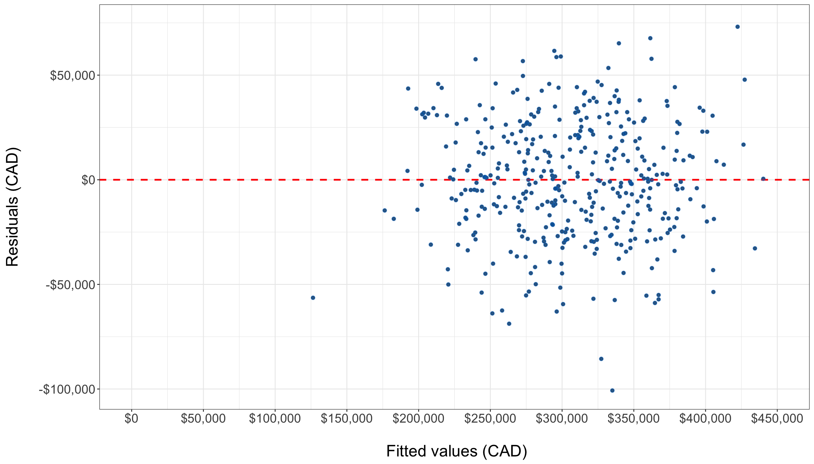
Next, let us examine the QQ-plot of standardized residuals. This plot compares the ordered residuals from our fitted model with what we would expect if the residual distribution were close to Normal. When the points lie reasonably close to the reference line, the OLS normality assumption looks more plausible; when they bend away strongly, especially in the tails, that suggests skewness, heavy tails, or unusually extreme observations. Specifically, in Figure 1.14, the standardized residuals track the reference line reasonably well, with no dramatic departures in the middle or the tails. This does not prove that the residuals are exactly Normal, but it does suggest that the normality assumption required for the usual classical OLS inferential tools is not visibly implausible in this example.
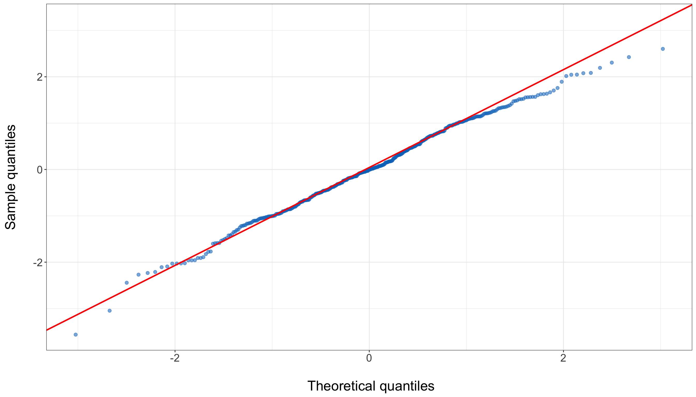
Both plots above (residuals versus fitted values plot and QQ-plot of standardized residuals) are useful because they show how the residuals behave, but it is also common to complement them with a few formal statistical tests. Since we have not yet fully reviewed the frequentist testing framework, we will keep the logic simple here and return to a more detailed treatment of hypotheses, evidence, and decision rules in Chapter 2. For now, in the context of OLS model diagnostics, it is enough to state that a hypothesis testing usually starts from a null hypothesis \(H_0\) describing a “no problem detected” situation, and then assesses whether the observed residual behaviour looks incompatible with that baseline.
Heads-up on formal inferential diagnostics versus graphical diagnostics!
A graphical diagnostic and a formal inferential test do not answer exactly the same question. The plots help us inspect what kind of issue may be present and whether it looks practically important, whereas the formal inferential tests help us assess whether the observed pattern provides enough evidence against a baseline null hypothesis \(H_0\). In practice, good regression analysis uses both kinds of tools together rather than relying on only one of them.
We now begin with the Shapiro–Wilk test, which is a formal inferential test on normality of the residuals. Here the hypotheses, null \(H_0\) and alternative \(H_1\),can be described informally as follows:
\[ \begin{gather*} H_0 \text{: the residuals are consistent with a Normal distribution;} \\ H_1 \text{: the residuals are not consistent with a Normal distribution.} \end{gather*} \]
Heads-up on test statistics and \(p\)-values in model diagnostics!
In this introductory housing example, we focus on the purpose, logic, and interpretation of each diagnostic tool rather than on the mathematical formulas behind the corresponding test statistics. This is intentional. In this chapter, the goal is to understand what each hypothesis-testing-based diagnostic is checking, what the null and alternative hypotheses mean, and how the resulting evidence should be interpreted in the context of the fitted regression model.
More specifically, when we report a diagnostic hypothesis test, the accompanying \(p\)-value should be read as a measure of how surprising the observed diagnostic evidence would be if the null hypothesis were true. A small \(p\)-value suggests that the observed pattern would be difficult to reconcile with the null model, while a larger \(p\)-value indicates that the sample does not provide strong enough evidence against it. A more detailed treatment of the logic of hypothesis testing, including the interpretation of \(p\)-values and test statistics, will be developed later in Chapter 2. For now, the key idea is to connect each diagnostic output to the practical modelling question it is meant to address.
To formally assess residual normality in this example, we use functions that are standard within each computing environment:
- In
R, the test itself is carried out withshapiro.test()from the built-in {stats} package, and the resulting object is converted into a clean tabular display withtidy()from {broom} (Robinson, Hayes, and Couch 2025); the small post-processing step withmutate_if()comes from {dplyr} (Wickham et al. 2023), which is only used here to round the printed numeric output for readability. - In
Python, we useshapiro()from {scipy} (Virtanen et al. 2020) to compute the Shapiro–Wilk test and then place the resulting statistic and \(p\)-value into a small {pandas} data frame for display.
library(broom)
library(dplyr)
# Extracting residuals from training model
training_residuals <- residuals(training_OLS_model)
# Running Shapiro–Wilk test
training_OLS_model_shapiro <- shapiro.test(training_residuals)
# Displaying outputs
tidy(training_OLS_model_shapiro) |>
mutate_if(is.numeric, round, 2)# A tibble: 1 × 3
statistic p.value method
<dbl> <dbl> <chr>
1 1 0.23 Shapiro-Wilk normality test# Importing function
from scipy.stats import shapiro
# Extracting residuals
training_residuals = training_OLS_model.resid
# Running Shapiro–Wilk test
training_OLS_model_shapiro = shapiro(training_residuals)
# Displaying outputs
training_OLS_model_shapiro = pd.DataFrame({
"W Statistic": [round(training_OLS_model_shapiro.statistic, 2)],
"p-value": [round(training_OLS_model_shapiro.pvalue, 2)]
})
training_OLS_model_shapiro| W Statistic | p-value | |
|---|---|---|
| 0 | 1.0 | 0.23 |
The test statistic \(W\) measures how closely the ordered residuals align with what we would expect under normality. Values of \(W\) closer to \(1\) indicate better agreement with a Normal shape. The Shapiro–Wilk output gives a test statistic \(W\) of 1 and a \(p\)-value of about 0.23. Since this \(p\)-value is above the threshold of the significance level \(\alpha = 0.05\) (more insights about this setting will be reviewed in Section 2.5), we do not see formal evidence against the normality assumption in this housing example (i.e., we fail to reject the null hypothesis \(H_0\) indicating that the residuals are consistent with a Normal distribution). This agrees with the earlier QQ-plot, which already suggested that the residual distribution looked reasonably close to Normal.
Next, we run the studentized Breusch–Pagan test, which checks whether the residual variance remains roughly constant across observations. Its hypotheses can be summarized as:
\[ \begin{gather*} H_0 \text{: the residual variance is constant;} \\ H_1 \text{: the residual variance changes systematically,} \\ \text{meaning that heteroscedasticity is present.} \end{gather*} \]
To formally assess whether the residual variance appears to remain approximately constant across observations, we use the following tools that implement the studentized Breusch–Pagan test for heteroscedasticity:
- In
R, this is done withbptest()from the {lmtest} package (Zeileis and Hothorn 2002), which provides a collection of diagnostic tests for linear regression models. - In
Python, we usehet_breuschpagan()fromstatsmodels.stats.diagnostic(within {statsmodels}), supplying the fitted-model residuals together with the model matrix of explanatory variables.
In both languages, the core computational idea is the same: use the fitted residuals from the OLS model to formally assess whether their variability appears to change systematically with the explanatory variables. In the current implementation, the Python function is aligned with the studentized version used by default in R, so the two outputs are conceptually comparable.
# Importing function
from statsmodels.stats.diagnostic import het_breuschpagan
# Extracting residuals and design matrix from the fitted model
residuals = training_OLS_model.resid
exog = training_OLS_model.model.exog
# Running Breusch-Pagan test
bp_test = het_breuschpagan(residuals, exog)
# Unpacking results
bp_stat, bp_pvalue, _, _ = bp_test
print(f"Breusch-Pagan test statistic: {bp_stat:.2f}",
f"p-value: {bp_pvalue:.2f}",
sep="\n")Breusch-Pagan test statistic: 1.53
p-value: 0.91The test statistic from the studentized Breusch–Pagan test measures how strongly the squared residual pattern is associated with the explanatory variables in the fitted model. Larger values of this test statistic provide more evidence against the assumption of constant residual variance. The studentized Breusch–Pagan output gives a test statistic of 1.53 and a \(p\)-value of about 0.91. Since this \(p\)-value is above the threshold of the significance level \(\alpha = 0.05\), we do not see formal evidence against the constant-variance assumption in this housing example (i.e., we fail to reject the null hypothesis \(H_0\) indicating that the residual variance is reasonably consistent with being constant across observations). This agrees with the earlier residuals-versus-fitted plot, which did not suggest a pronounced funnel shape or another strong visual pattern pointing to heteroscedasticity.
We also check residual independence through the Durbin–Watson test. In this example, the coding output is framed against positive first-order autocorrelation, so the hypotheses are:
\[ \begin{gather*} H_0 \text{: there is no positive first-order autocorrelation in the residuals;} \\ H_1 \text{: there is positive first-order autocorrelation in the residuals.} \\ \end{gather*} \]
To formally assess whether the fitted residuals exhibit evidence of first-order autocorrelation, we use the following tools that implement the Durbin–Watson diagnostic in each language:
- In
R, this is done withdwtest()from the {lmtest} package. - In
Python, we usedurbin_watson()fromstatsmodels.stats.stattools, supplying the residuals from the fitted OLS model.
In both languages, the core computational idea is the same: use the sequence of fitted residuals to assess whether neighbouring residuals tend to move together systematically rather than behaving roughly independently.
Heads-up on the Durbin–Watson output in R versus Python!
A small practical difference is that the R implementation reports both a test statistic and a corresponding \(p\)-value, whereas the Python function shown here reports only the Durbin–Watson statistic itself. For that reason, the R output is more complete in regards to the formal inferential conclusion about the hypotheses, while the Python output remains useful for obtaining and interpreting the diagnostic statistic in descriptive terms.
dwtest(training_OLS_model)
Durbin-Watson test
data: training_OLS_model
DW = 1.9859, p-value = 0.4453
alternative hypothesis: true autocorrelation is greater than 0# Importing function
from statsmodels.stats.stattools import durbin_watson
# Running Durbin-Watson test
print("Durbin–Watson:", durbin_watson(training_OLS_model.resid))Durbin–Watson: 1.985911333336697The test statistic from the Durbin–Watson test measures the extent to which consecutive residuals tend to move together in the same direction. Values of this statistic closer to \(2\) indicate better agreement with the assumption of no first-order autocorrelation, whereas values noticeably below 2 suggest positive autocorrelation and values noticeably above 2 suggest negative autocorrelation. The R output gives a Durbin–Watson test statistic of 1.9859 and a \(p\)-value of about 0.4453. Since this \(p\)-value is above the threshold of the significance level \(\alpha = 0.05\), we do not see formal evidence against the assumption of no first-order autocorrelation in this housing example (i.e., we fail to reject the null hypothesis \(H_0\) indicating that the residuals do not exhibit evidence of first-order autocorrelation). This conclusion is also descriptively consistent with the fact that the reported Durbin–Watson statistic lies reasonably close to \(2\).
Now, a different concern is multicollinearity, which is about overlap among explanatory variables rather than about the residual distribution itself. High multicollinearity does not necessarily harm prediction badly, but it can make coefficient estimates unstable and can inflate standard errors, which is especially problematic for interpretation and formal inference. That said, VIFs measure how much the uncertainty of a regression coefficient is inflated because that regressor overlaps with the others. Values close to \(1\) indicate very little collinearity, while larger values indicate growing concern.
Next, we assess possible multicollinearity among the explanatory variables in our housing example by examining their corresponding VIFs:
- In
R, this step is relatively direct because a fitted OLS model can be passed to a ready-to-use function calledvif()from the {car} package (Fox and Weisberg 2019) that returns the corresponding diagnostic summary. - In
Python, however, obtaining an output that is comparable in spirit often requires a more manual implementation, especially when we want a term-based summary that behaves similarly to the one commonly used inR. For transparency, the full code for the helper functioncar_like_gvif()used in this example is also available in the textbook source file for this chapter.
Tip on computing VIFs in R versus Python!
In Python, there is not always a single built-in function that reproduces the same term-based output in exactly the same way, unlike R, especially when categorical variables or multi-degree-of-freedom terms are involved. For that reason, in this example, the custom helper function car_like_gvif() mimics the spirit of vif() from R. At a high level, this helper extracts the fitted model matrix, removes the intercept, standardizes the regressor columns, builds their correlation structure, and then computes generalized variance inflation factors (GVIFs) term by term. This makes the Python output more comparable to the R output, particularly in settings where a model term may occupy more than one column in the design matrix (i.e., the matrix that stores the numerical representation of all explanatory-variable terms used by the fitted model, one row per observation and one column per model term or encoded predictor component).
In this textbook, the main pedagogical goal is not to derive the full matrix calculations behind these quantities, but rather to show how we can obtain a practical multicollinearity diagnostic in both languages and interpret it consistently. A fuller discussion of what VIFs and GVIFs represent, why generalized versions are needed in some cases, and how these quantities connect to the structure of the design matrix will be developed later in Chapter 3.
GVIF Df GVIF^(1/(2*Df))
bedrooms 1.001389 1 1.000694
sqft 1.011074 1 1.005522
school_distance 1.011803 1 1.005884
neighbourhood 1.005917 2 1.001476gvif_table = car_like_gvif(training_OLS_model)
print(gvif_table) GVIF Df GVIF^(1/(2*Df))
term
neighbourhood 1.005917 2 1.001476
bedrooms 1.001389 1 1.000694
sqft 1.011074 1 1.005522
school_distance 1.011803 1 1.005884The above VIF results are all extremely close to \(1\) for all regressors. This indicates essentially no meaningful multicollinearity in the current design matrix, which is very good news for our inferential goal because it means coefficient uncertainty is not being inflated by strong redundancy among the explanatory variables.
Then, let us inspect Cook’s distance, which helps us detect whether a small number of observations are exerting disproportionate influence on the fitted model. That said, before interpreting the specific pattern in Figure 1.15, it is helpful to understand the basic components of a Cook’s distance plot:
- Along the horizontal axis, we have the observation index, so each vertical line corresponds to one observation in the training set.
- Along the vertical axis, we have that observation’s Cook’s distance, which summarizes how much the fitted regression results would change if that observation were removed and the model were fit again.
- In plain words, taller spikes indicate observations that exert relatively more influence on the fitted model, whereas shorter spikes indicate observations whose removal would have little effect.
- The main goal of this plot is therefore not to test a formal hypothesis, but to visually check whether a small number of observations appear to stand out as disproportionately influential relative to the rest.
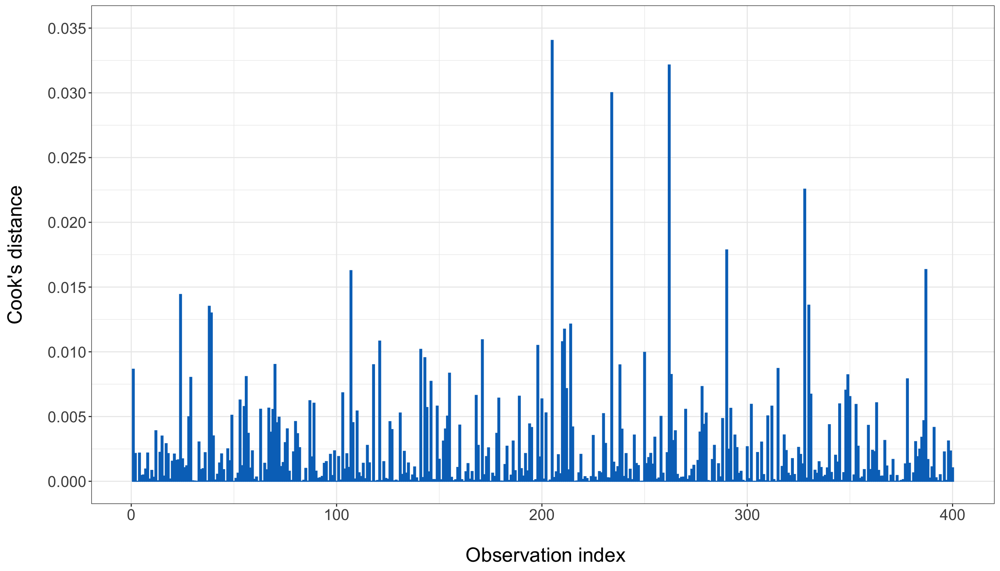
With the above interpretation guidelines in mind, the Cook’s distance plot in Figure 1.15 does not show an obvious handful of observations dominating the fit. There may still be some points that are more influential than others, which is always true in practice, but the overall picture is not one of a model being driven by a few extreme cases. This again supports the idea that our fitted OLS model is reasonably stable on the training data.
Finally, to complete the goodness-of-fit picture, we also report \(R^2\) and adjusted \(R^2\). These summarize how much of the variation in the response is explained by the fitted model on the training data. The adjusted version is useful because it penalizes the inclusion of additional explanatory variables.
Heads-up on what \(R^2\) does and does not tell us!
A large \(R^2\) does not guarantee that the model assumptions are appropriate, and a small \(R^2\) does not automatically mean that the model is useless. These quantities only summarize in-sample explanatory power. That is why we interpret them together with diagnostic plots, formal tests, and—later in this chapter—the testing-set evaluation.
print(
f"R^2: {training_OLS_model.rsquared:.4f}\n"
f"Adj. R^2: {training_OLS_model.rsquared_adj:.4f}"
)R^2: 0.7775
Adj. R^2: 0.7746For this training fit, we obtain an \(R^2\) of 0.7775 and an adjusted \(R^2\) of 0.7746. These values indicate that the OLS model explains a substantial portion of the variation in sale price within the training sample. The fact that the adjusted \(R^2\) is very close to \(R^2\) also suggests that the included explanatory variables are not simply inflating the fit by adding unnecessary complexity.
Taken together, the graphical diagnostics, formal hypothesis tests, and summary metrics tell a fairly coherent story for this housing example. The residuals-versus-fitted plot does not reveal an obvious structural failure, the QQ-plot and Shapiro–Wilk test do not provide meaningful evidence against normality, the Breusch–Pagan test does not suggest heteroscedasticity, the Durbin–Watson result does not point to autocorrelation, the VIFs show essentially no collinearity problem, and the Cook’s distance plot does not indicate that a tiny number of houses are dominating the fit. None of this proves that the OLS model is perfect, but it does suggest that the model is behaving well enough on the training data to move forward to the results stage for both our inferential and predictive inquiries. Table 1.11 summarizes these goodness-of-fit findings.
| Diagnostic | Evidence from our goodness-of-fit analysis | Interpretation in plain words | Main implication |
|---|---|---|---|
| Residuals versus fitted values plot | No strong curvature or funnel shape is visually apparent in Figure 1.13. | The fitted mean structure looks broadly reasonable, and the spread of residuals does not show a major visual instability. | Supports both inference and prediction. |
| QQ-plot of standardized residuals | Points track the reference line reasonably well in Figure 1.14. | Residuals look broadly compatible with a Normal shape. | Supports classical OLS inference. |
| Shapiro–Wilk test | Test statistic \(W\) approximately equal to 1 and \(p\)-value of about 0.23. | No meaningful evidence against normality of residuals. | Supports classical OLS inference. |
| Studentized Breusch–Pagan test | Statistic approximately equal to 1.53 and \(p\)-value of about 0.91. | No meaningful evidence of heteroscedasticity. | Supports stable standard errors and prediction. |
| Durbin–Watson test | Statistic approximately equal to 1.9859 and \(p\)-value of about 0.4453. | No meaningful evidence of positive residual autocorrelation. | Supports reliability of standard errors. |
| Variance inflation factors (VIFs) | All values are very close to 1. | The explanatory variables do not show a problematic overlap structure. | Supports coefficient stability and interpretation. |
| Cook’s distance plot | No obvious standout observations dominate the plot. | The fitted model does not appear to be driven by a small number of highly influential houses. | Supports model stability. |
| \(R^2\) and adjusted \(R^2\) | \(R^2\) equal to 0.7775 and adjusted \(R^2\) equal to 0.7746. | The model explains a substantial amount of in-sample variation without much penalty for complexity. | Encouraging for in-sample predictive behaviour. |
Heads-up on what to do when goodness-of-fit checks raise concerns!
In practice, goodness-of-fit checks should not be treated as a simple yes/no gatekeeping device. A fitted regression model is rarely declared “perfect” or “completely invalid” based on a single plot or test alone. Instead, the goal is to examine the overall diagnostic picture by combining graphical checks, formal hypothesis tests, the modelling purpose of the analysis, subject-matter context, and the severity of any detected problems.
When several diagnostics raise concerns, this does not automatically mean that the analysis must be discarded. Rather, it is often a signal to pause and ask whether the current model is still adequate for the inferential or predictive goal at hand, or whether some revision is needed. Such revisions may include reconsidering the explanatory variables, adding transformations or interaction terms, revisiting possible outliers or influential observations, or returning to the data modelling stage of the workflow.
If the diagnostic issues are mild, the model may still be serviceable with a careful discussion of its limitations in the subsequent storytelling stage. However, if the lack of fit is more substantial or structurally incompatible with the assumptions of the current model, then it may be more appropriate to move toward an alternative regression framework. This is one of the reasons why later chapters in this textbook include a textbox called When to Use and Not Use a Given Regression Model: those textboxes are intended to help you decide when the current model is no longer a good match for the data-generating behaviour and when it may be time to iterate back to the data modelling stage of the workflow and consider a different regression approach.
1.4.7 Results
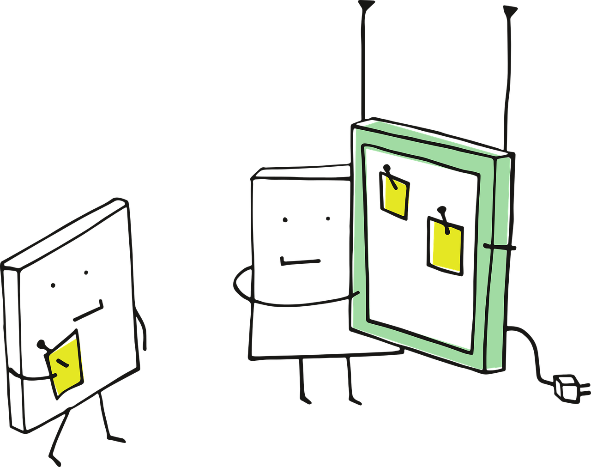
The results stage is where we use the fitted model to answer the original inquiry more directly. As indicated in Figure 1.16, this stage comes after goodness of fit because we only want to extract substantive conclusions once we have some evidence that the fitted model is behaving reasonably well for the purpose at hand. In other words, after asking in the previous stage whether the fitted model is adequate enough to trust, we now ask what that fitted model actually tells us about our inferential and predictive questions.

The exact nature of the results depends on the workflow flavour:
- For an inferential inquiry, the results stage focuses on model-based summaries that help us assess associations, quantify uncertainty, and make more formal statements about the explanatory variables in relation to the response.
- For a predictive inquiry, the results stage focuses on how well the fitted model performs on new observations that were not used to estimate the regression terms. These two perspectives are related, but they answer different questions and therefore require different uses of the available data. Note that a key idea in this stage is that predictive assessment must be carried out carefully to avoid data leakage.
Definition of data leakage
Data leakage occurs when information from outside the proper training process is allowed to influence model fitting, model selection, or predictive assessment in a way that would not be available when making predictions on genuinely new observations. In practice, leakage can lead to performance results that look artificially strong because the model has, directly or indirectly, already “seen” information from the data used for evaluation.
In this textbook, the idea of data leakage is especially important for predictive inquiries. Once a model has been estimated on the training data, the corresponding regression terms must be carried forward to the testing data without being re-estimated there. Otherwise, the testing set would stop playing its intended role as a more protected source of out-of-sample evidence. Thus, in the predictive branch of our workflow in Figure 1.16, we use the OLS model trained on the training data to generate predictions on the testing data, and we evaluate prediction accuracy using those out-of-sample predictions. By contrast, for the inferential inquiry in this textbook, we deliberately fit the model on the testing data at the results stage so that the earlier exploratory and diagnostic work on the training data does not directly drive the formal inferential summaries, thereby helping reduce the risk of double dipping.
Heads-up on inference, prediction, double dipping, and data leakage!
The inferential and predictive branches of the workflow use the data split differently. For the inferential branch, the testing set plays a protected role so that exploratory work and diagnostic checking carried out earlier on the training data are more separated from the formal coefficient summaries reported later. For the predictive branch, the fitted model from the training data must be used unchanged on the testing data to avoid data leakage. These are different concerns, but both reflect the same general principle: the role of each subset of the observed sample must remain clear throughout the workflow.
An useful and practical way to think about this results stage is that it translates model output into problem-specific evidence. Regression coefficients, fitted values, prediction errors, intervals, and summary measures are not yet results in themselves; they become results only when interpreted relative to the original inquiry, the modelling assumptions, and the workflow flavour. In that sense, the results stage is still technical, but it is less about checking whether the model is admissible and more about extracting the most meaningful quantitative conclusions from it.
Heads-up on the role of the results stage!
The results stage is not the same as the storytelling stage. Here, we still work relatively close to the inferential or predictive output of the model, and our audience may still be somewhat technical. The main goal is to identify and organize the key findings supported by the fitted model. The next stage, storytelling, will then focus on communicating those findings in a clear and accessible narrative for a broader audience.
More specifically, another practical way to approach the results stage is to ask a small set of guiding questions:
- What is the primary inquiry we are answering? We should return explicitly to the original inferential or predictive question from the study design stage.
- Which model outputs are most relevant to that inquiry? For inferential work, these may include estimated coefficients, uncertainty summaries, interval estimates, or formal testing results. For predictive work, these may include test-set performance measures, predicted values, or prediction intervals.
- How should those outputs be interpreted in context? A statistically significant effect, a narrow interval, or a strong predictive metric is only meaningful when tied back to the actual application.
- What limitations still remain? Even after passing goodness-of-fit checks, results should be interpreted with appropriate caution and with awareness of any modelling compromises made along the way.
With these ideas in place, we are now ready to revisit our housing example and show how the fitted OLS model can be used to deliver both inferential and predictive results in a structured and workflow-consistent way.
Example: Results for the OLS Housing Model
At the results stage of the housing workflow, we address the inferential and predictive inquiries in different ways:
- For the inferential inquiry, we fit the same OLS model structure on the testing data and summarize its estimated coefficients, standard errors, \(t\)-statistics, and \(p\)-values. This follows the logic adopted in this textbook: after using the training data for exploratory work, preliminary modelling decisions, and goodness-of-fit checks, we move to the testing data for more protected inferential summaries, thereby helping reduce the risk of double dipping.
- For the predictive inquiry, however, we do not refit the model on the testing data. Instead, we keep the regression terms estimated from the training data and use that trained model to generate predicted housing sale prices for the observations in the testing data. Then, we compare those predictions against the observed testing responses to assess out-of-sample prediction accuracy. This is precisely where the earlier definition of data leakage matters: if we were to refit the predictive model on the testing data before evaluating it, the resulting performance summary would no longer reflect genuine out-of-sample behaviour.
Inferential results: coefficient and confidence interval summary on the testing set
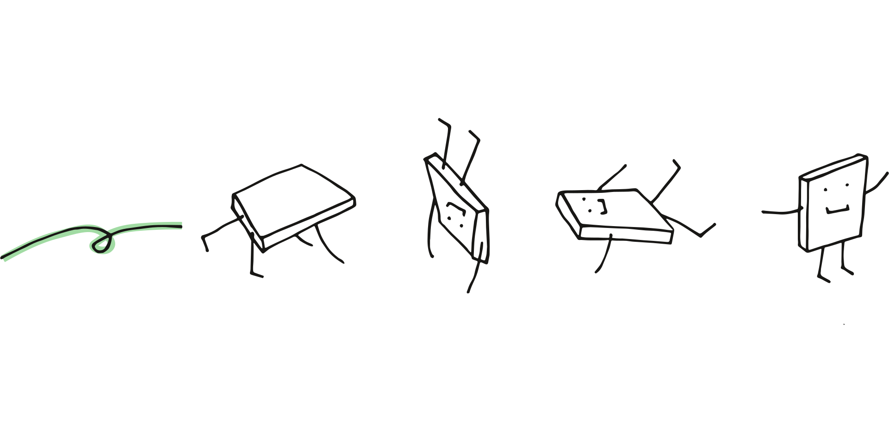
At this point in the results stage, we focus on the inferential branch of the workflow shown in Figure 1.16. More specifically, after fitting the OLS model on the testing set, we first examine coefficient-level hypothesis tests to determine which regression terms show stronger statistical evidence against their corresponding null hypotheses. If a given coefficient appears statistically significant, the next inferential step is not to stop at the associated \(p\)-value, but rather to also obtain a confidence interval so that we can quantify the range of plausible values for that coefficient under the fitted model. This is important because the updated results workflow in Figure 1.16 emphasizes not only significance conclusions, but also interval estimation and parameter interpretation.
Note that we are not yet developing the full mathematical theory behind OLS confidence intervals and coefficient tests in this housing data example, since that will be done later in Chapter 3. Instead, we aim to show how a fitted regression model can be used on the testing set to produce a structured inferential summary that includes coefficient estimates, standard errors, \(t\)-statistics, \(p\)-values, and corresponding 95% confidence intervals. These components will then allow us to organize the significance conclusions and begin interpreting the coefficients more meaningfully:
-
R: In Listing 1.15, we fit the OLS model withlm()and then summarize its inferential output using functions from the {broom} and {tidyverse} ecosystems. More specifically,lm()fits the regression ofsale_priceon the explanatory variablesbedrooms,sqft,school_distance, andneighbourhoodusing thetesting_data. We then usetidy()from {broom} withconf.int = TRUEandconf.level = 0.95so that the resulting tidy table contains not only coefficient estimates, standard errors, \(t\)-statistics, and \(p\)-values, but also the corresponding 95% confidence intervals. Finally, we round the numerical output to improve readability. -
Python: In Listing 1.16, we fit and summarize the same OLS model using tools from {statsmodels}, {pandas}, and {numpy}. The functionsmf.ols()specifies the regression ofsale_priceonbedrooms,sqft,school_distance, andneighbourhoodusing thetesting_data, and.fit()estimates the corresponding regression coefficients and related inferential statistics. We then combine the fitted coefficients, standard errors, \(t\)-statistics, \(p\)-values, and the 95% confidence interval bounds obtained from.conf_int(alpha = 0.05)into a tidy table withpd.DataFrame(). This produces a compact inferential summary in a format comparable to the one obtained inR.
# Loading libraries
library(tidyverse)
library(broom)
# Fitting the OLS model
testing_OLS_model <- lm(
formula = sale_price ~ bedrooms + sqft +
school_distance + neighbourhood,
data = testing_data
)
# Creating a tidy inferential summary with 95% confidence intervals
testing_OLS_tidy <- tidy(
testing_OLS_model,
conf.int = TRUE,
conf.level = 0.95
) |>
mutate_if(is.numeric, round, 2)
# Displaying the tidy table
testing_OLS_tidy# A tibble: 6 × 7
term estimate std.error statistic p.value conf.low conf.high
<chr> <dbl> <dbl> <dbl> <dbl> <dbl> <dbl>
1 (Intercept) 53564. 4508. 11.9 0 44722. 62406.
2 bedrooms 14519. 436. 33.3 0 13664. 15373
3 sqft 100. 1.93 51.7 0 96.3 104.
4 school_distance -8622 535. -16.1 0 -9671. -7573.
5 neighbourhoodSuburban 28747. 2131. 13.5 0 24567. 32927.
6 neighbourhoodUrban 59266. 2121. 27.9 0 55106. 63427.# Fitting the OLS model
testing_OLS_model = smf.ols(
formula="sale_price ~ bedrooms + sqft + school_distance + neighbourhood",
data=testing_data
).fit()
# Obtaining 95% confidence intervals
testing_OLS_ci = testing_OLS_model.conf_int(alpha=0.05)
testing_OLS_ci.columns = ["conf.low", "conf.high"]
# Creating a tidy inferential summary table
testing_OLS_tidy = pd.DataFrame({
"term": testing_OLS_model.params.index,
"estimate": np.round(testing_OLS_model.params.values, 2),
"std.error": np.round(testing_OLS_model.bse.values, 2),
"statistic": np.round(testing_OLS_model.tvalues.values, 2),
"p.value": np.round(testing_OLS_model.pvalues.values, 4),
"conf.low": np.round(testing_OLS_ci["conf.low"].values, 2),
"conf.high": np.round(testing_OLS_ci["conf.high"].values, 2)
})
# Displaying the tidy table
print(testing_OLS_tidy.to_string(index=False)) term estimate std.error statistic p.value conf.low conf.high
Intercept 50125.77 4376.85 11.45 0.0 41540.78 58710.77
neighbourhood[T.Suburban] 30358.72 2082.35 14.58 0.0 26274.28 34443.16
neighbourhood[T.Urban] 61394.50 2078.18 29.54 0.0 57318.24 65470.75
bedrooms 14470.63 436.81 33.13 0.0 13613.84 15327.41
sqft 100.91 1.86 54.21 0.0 97.26 104.56
school_distance -8317.49 530.10 -15.69 0.0 -9357.24 -7277.73From the data modelling stage, let us recall the regression equation (i.e., Equation 1.4) for this housing example:
\[ Y_i = \beta_0 + \beta_1 x_{i, 1} + \beta_2 x_{i, 2} + \beta_3 x_{i, 3} + \beta_4 x_{i, 4} + \beta_5 x_{i, 5} + \varepsilon_i. \]
From an inferential point of view, each coefficient in the fitted regression equation can be paired with a corresponding \(t\)-test. For the coefficient attached to the \(j\)th regressor, the hypotheses take the familiar form
\[ \begin{gather*} H_0\text{: } \beta_j = 0; \\ H_1\text{: } \beta_j \neq 0. \end{gather*} \]
Here, the null hypothesis \(H_0\) states that, under the testing_OLS_model, the corresponding explanatory variable does not show evidence of a nonzero linear association with sale_price after accounting for the other included terms. The alternative hypothesis \(H_1\) states that the coefficient is not zero. The reported \(t\)-statistic compares the estimated coefficient against its standard error, so larger absolute values of that statistic indicate stronger evidence against the null hypothesis. The accompanying \(p\)-value then helps us assess whether the observed \(t\)-statistic would be surprising if \(H_0\) were true. A more detailed discussion of this inferential logic will be developed later in Section 2.5, and then specifically for OLS in Chapter 3.
To help organize these coefficient-level decisions, Table 1.12 is a small summary that flags which regression terms appear statistically significant. For each model term, this table reports the estimated coefficient, its standard error, the corresponding \(t\)-statistic, the associated \(p\)-value, and the resulting decision at the significance level \(\alpha = 0.05\).
| Term | Estimate | Std. Error | t-statistic | p-value | Decision |
|---|---|---|---|---|---|
| Intercept | 53,563.90 | 4,507.76 | 11.88 | < .001 | Reject H0 |
| bedrooms | 14,518.53 | 435.63 | 33.33 | < .001 | Reject H0 |
| sqft | 100.11 | 1.93 | 51.74 | < .001 | Reject H0 |
| school_distance | -8,622.00 | 534.68 | -16.13 | < .001 | Reject H0 |
| neighbourhoodSuburban | 28,746.56 | 2,131.05 | 13.49 | < .001 | Reject H0 |
| neighbourhoodUrban | 59,266.22 | 2,121.11 | 27.94 | < .001 | Reject H0 |
Now, the interval estimates in Table 1.13 take us one step further than the significance decision alone from Table 1.12. While the coefficient-level \(t\)-tests tell us whether the data provide evidence against the null hypothesis that a coefficient is zero, the 95% confidence intervals in Table 1.13 help us quantify a range of coefficient values that remain plausible under the fitted model. In that sense, Table 1.13 supports the next inferential step in Figure 1.16: moving from significance conclusions to parameter interpretation:
- For a continuous regressor, the estimated coefficient can be read literally as the expected change in the response associated with a one-unit increase in that regressor, holding the remaining terms in the model fixed. The corresponding 95% confidence interval then gives a range of plausible values for that expected change.
- For a categorical regressor represented through a contrast term, the estimated coefficient is interpreted relative to the corresponding baseline category, and the confidence interval gives a plausible range for that difference in expected response.
In both cases above, if the interval does not include zero, this agrees with the finding that the corresponding coefficient was statistically significant at the significance level \(\alpha = 0.05\).
| Term | Estimate | 95% CI Lower | 95% CI Upper |
|---|---|---|---|
| bedrooms | 14,518.53 | 13,664.06 | 15,373.00 |
| sqft | 100.11 | 96.31 | 103.90 |
| school_distance | -8,622.00 | -9,670.75 | -7,573.25 |
| neighbourhoodSuburban | 28,746.56 | 24,566.60 | 32,926.51 |
| neighbourhoodUrban | 59,266.22 | 55,105.75 | 63,426.68 |
At this introductory stage, our goal is not yet to unpack every coefficient in full substantive detail, since the more careful interpretation of continuous effects and baseline terms will be revisited later in Chapter 3. Still, this example already shows an important workflow principle: inferential regression results are not fully conveyed by \(p\)-values alone. Instead, they are more informative when significance conclusions are paired with interval estimates and then connected to the practical meaning of the fitted coefficients.
Predictive results: out-of-sample prediction accuracy on the testing set
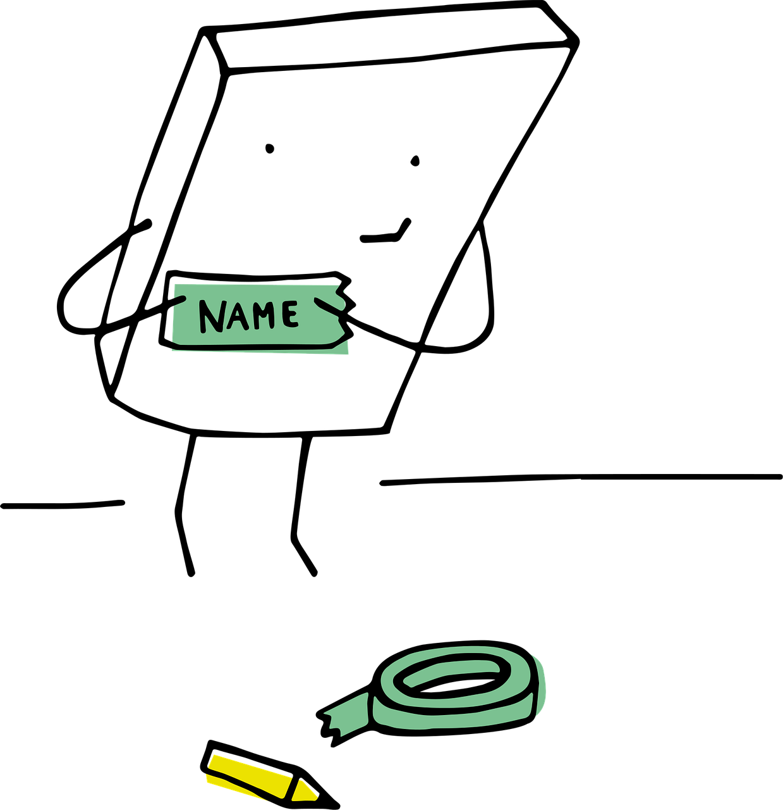
We now turn to the predictive branch of the results stage. Unlike the inferential branch, where we deliberately fit the model on the testing set to reduce the risk of double dipping, the predictive branch keeps the regression terms estimated on the training set and uses them to generate predictions on the testing set. This follows the predictive path in Figure 1.16: first apply the built-in prediction function to observations outside the training sample, and then assess prediction accuracy using those out-of-sample predictions.
Recall that our predictive inquiry from the study design stage, from Section 1.4.1, was motivated by the question:
What would be the predicted price of a rural house with 3,500 square feet and 3 bedrooms located on a block where the closest school is at 2.5 km?
To answer predictive questions like this one, we need to focus on how well the trained regression model generalizes beyond the data used to estimate its coefficients. Thus, for the predictive branch, the testing set must remain a genuinely out-of-sample source of evidence. If we were to re-estimate the regression terms on the testing set before evaluating prediction accuracy, we would introduce data leakage and the resulting performance summary would no longer reflect honest out-of-sample predictive behaviour.
Heads-up on validation sets versus testing sets in the predictive branch!
In a fuller predictive workflow, a validation set can be used to compare competing model specifications or tuning decisions before a final model is chosen. However, throughout the main worked examples of this textbook, including the present housing example, we do not use a separate validation set because our focus is not on model selection across many competing predictive specifications. Instead, once the regression structure has been chosen, we use the regression model trained on the training set to generate predictions on the testing set, and we assess predictive accuracy there. This preserves the testing set as a more protected source of out-of-sample evidence.
At a general level, predictive regression can produce more than a single point prediction. A point prediction gives one best-guess value for the response at a chosen feature profile. A confidence interval for the expected response gives a plausible range for the mean response at that same profile under the fitted model. A prediction interval, on the other hand, gives a plausible range for the response of a new individual observation with those features. Because prediction intervals must account for both uncertainty in the fitted mean and the remaining unexplained variability around it, they are typically wider than the corresponding confidence intervals for the mean response. We will revisit these ideas more formally in Chapter 3, but the present example already gives a useful first illustration.
Since our fitted predictive model includes the categorical regressor neighbourhood, a fully specified prediction also requires a neighbourhood type. Thus, to answer the motivating predictive question concretely, we will illustrate the prediction for a house with bedrooms = 3, sqft = 3500, school_distance = 2.5, and neighbourhood = "Rural" (the baseline category used earlier in the example as shown in Table 1.9):
-
R: In Listing 1.17, we use the already fittedtraining_OLS_modeltogether with the built-inpredict()function. First, we generate predicted sale prices for all observations in thetesting_data, which allows us to compare those out-of-sample predictions with the observed sale prices in the testing set and compute predictive accuracy metrics. Then, we use the same trained model to obtain a point prediction for a new house profile. By settinginterval = "confidence"orinterval = "prediction", we also obtain a 95% confidence interval for the expected mean sale price at that profile and a 95% prediction interval for the price of a new individual house with those features. -
Python: In Listing 1.18, we follow the same logic using {statsmodels}, {pandas}, and {numpy}. The trained objecttraining_OLS_modelgenerates out-of-sample predictions on thetesting_datavia.predict(), and those predictions are compared with the observed testing responses to summarize predictive accuracy. For the single-house prediction, we use.get_prediction()and its.summary_frame(alpha = 0.05)output, which returns the fitted mean prediction together with interval estimates for the mean response and for an individual future observation.
# Generating out-of-sample predictions on the testing set
testing_predictions <- testing_data |>
mutate(predicted_sale_price = predict(training_OLS_model, newdata = testing_data))
# Computing predictive accuracy metrics on the testing set
housing_predictive_accuracy <- tibble(
Metric = c("RMSE", "MAE", "Test R-squared"),
Value = c(
sqrt(mean((testing_predictions$sale_price - testing_predictions$predicted_sale_price)^2)),
mean(abs(testing_predictions$sale_price - testing_predictions$predicted_sale_price)),
1 - sum((testing_predictions$sale_price - testing_predictions$predicted_sale_price)^2) /
sum((testing_predictions$sale_price - mean(testing_predictions$sale_price))^2)
)
) |>
mutate(Value = round(Value, 2))
# Defining a new house profile for prediction
new_house <- tibble(
bedrooms = 3,
sqft = 3500,
school_distance = 2.5,
neighbourhood = factor("Rural", levels = levels(training_data$neighbourhood))
)
# Obtaining a point prediction and a 95% confidence interval for the expected mean response
new_house_confidence <- as_tibble(
predict(training_OLS_model, newdata = new_house, interval = "confidence", level = 0.95)
) |>
rename(
predicted_sale_price = fit,
mean_ci_lower = lwr,
mean_ci_upper = upr
)
# Obtaining a 95% prediction interval for a new individual house
new_house_prediction <- as_tibble(
predict(training_OLS_model, newdata = new_house, interval = "prediction", level = 0.95)
) |>
rename(
predicted_sale_price = fit,
pred_pi_lower = lwr,
pred_pi_upper = upr
)
# Combining interval outputs into one summary table
new_house_predictive_summary <- tibble(
bedrooms = new_house$bedrooms,
sqft = new_house$sqft,
school_distance = new_house$school_distance,
neighbourhood = as.character(new_house$neighbourhood),
predicted_sale_price = round(new_house_confidence$predicted_sale_price, 2),
mean_ci_lower = round(new_house_confidence$mean_ci_lower, 2),
mean_ci_upper = round(new_house_confidence$mean_ci_upper, 2),
pred_pi_lower = round(new_house_prediction$pred_pi_lower, 2),
pred_pi_upper = round(new_house_prediction$pred_pi_upper, 2)
)# Importing R-generated testing set via reticulate
testing_data = r.testing_data
# Generating out-of-sample predictions on the testing set
testing_predictions = testing_data.copy()
testing_predictions["predicted_sale_price"] = training_OLS_model.predict(testing_data)
# Computing predictive accuracy metrics on the testing set
housing_predictive_accuracy = pd.DataFrame({
"Metric": ["RMSE", "MAE", "Test R-squared"],
"Value": [
np.sqrt(np.mean((testing_predictions["sale_price"] - testing_predictions["predicted_sale_price"]) ** 2)),
np.mean(np.abs(testing_predictions["sale_price"] - testing_predictions["predicted_sale_price"])),
1 - np.sum((testing_predictions["sale_price"] - testing_predictions["predicted_sale_price"]) ** 2) /
np.sum((testing_predictions["sale_price"] - np.mean(testing_predictions["sale_price"])) ** 2)
]
})
housing_predictive_accuracy["Value"] = np.round(housing_predictive_accuracy["Value"], 2)
# Defining a new house profile for prediction
new_house = pd.DataFrame({
"bedrooms": [3],
"sqft": [3500],
"school_distance": [2.5],
"neighbourhood": ["Rural"]
})
# Obtaining mean-response and individual-prediction intervals
new_house_prediction = training_OLS_model.get_prediction(new_house).summary_frame(alpha=0.05)
# Creating a compact summary table
new_house_predictive_summary = pd.DataFrame({
"bedrooms": new_house["bedrooms"],
"sqft": new_house["sqft"],
"school_distance": new_house["school_distance"],
"neighbourhood": new_house["neighbourhood"],
"predicted_sale_price": np.round(new_house_prediction["mean"], 2),
"mean_ci_lower": np.round(new_house_prediction["mean_ci_lower"], 2),
"mean_ci_upper": np.round(new_house_prediction["mean_ci_upper"], 2),
"pred_pi_lower": np.round(new_house_prediction["obs_ci_lower"], 2),
"pred_pi_upper": np.round(new_house_prediction["obs_ci_upper"], 2)
})The first predictive quantity we need is a summary of out-of-sample prediction accuracy on the testing set. In Table 1.14 (via housing_predictive_accuracy), we report three common metrics. The root mean squared error (RMSE) and the mean absolute error (MAE) summarize how far, on average, the testing-set predictions are from the observed sale prices, with smaller values indicating better predictive accuracy. The test-set \(R^2\) summarizes how much of the variation in the testing responses is captured by the trained model’s predictions, with larger values indicating better predictive performance.
| Metric | Value |
|---|---|
| RMSE | 30,412.23 |
| MAE | 24,191.37 |
| Test R-squared | 0.75 |
These predictive accuracy measures provide a general sense of how well the regression terms estimated on the training set generalize to unseen observations from the same broader housing context. In this introductory chapter, we do not yet dwell on benchmark thresholds for what counts as “good” predictive performance, since that depends heavily on the application and the scale of the response variable. The key workflow point is simpler: predictive assessment must be carried out on observations that were not used to estimate the regression coefficients in the first place.
Heads-up on using adjusted \(R^2\) in the predictive branch!
It is reasonable to report the adjusted \(R^2\) of the fitted regression model as a complementary summary, since it describes how well the model explains variation in the response while accounting for the number of included regressors. However, in a predictive inquiry, adjusted \(R^2\) should not be treated as the main measure of predictive success.
The reason is that adjusted \(R^2\) is still an in-sample quantity: it summarizes the fitted model on the data used for estimation. By contrast, the main goal of the predictive branch is to assess how well the model generalizes to unseen observations. For that reason, the most important predictive summaries remain the metrics computed on the testing set, such as prediction error measures and test-set \(R^2\) when appropriate.
In short, adjusted \(R^2\) can be useful as supporting context, but the core predictive conclusions should be based on out-of-sample performance rather than on in-sample fit summaries alone.
The second predictive quantity we consider is the model-based prediction for a single house profile corresponding to our motivating question. In Table 1.15 (via new_house_predictive_summary), we report the point prediction together with a 95% confidence interval for the expected mean sale price at that feature profile and a 95% prediction interval for the sale price of a new individual house with those same features.
| Quantity | Value |
|---|---|
| Predicted sale price | 425384.3 |
| 95% confidence interval for the expected mean sale price (lower bound) | 412398.0 |
| 95% confidence interval for the expected mean sale price (upper bound) | 438370.5 |
| 95% prediction interval (lower bound) | 368100.7 |
| 95% prediction interval (upper bound) | 482667.9 |
The above interval estimates help clarify two different kinds of predictive uncertainty:
- The confidence interval for the expected mean sale price reflects uncertainty about the model’s estimated average response at the chosen feature profile.
- The prediction interval, by contrast, is wider because it must also account for the remaining house-to-house variation around that estimated mean.
Thus, if our goal is to describe the model’s estimated average sale price for such houses, the confidence interval is the relevant summary; if our goal is to anticipate the possible sale price of one new individual house, the prediction interval is the more appropriate one.
At this point, we have now completed both the inferential and predictive branches of the housing example’s results stage. A fuller synthesis of what these outputs mean for the original housing questions will be developed next in the storytelling stage, where the emphasis shifts from organized model output to a clearer narrative communication of the findings.
1.4.8 Storytelling
The storytelling stage is where the technical results of a regression analysis are translated into a message that is useful for the intended audience. Up to this point in the workflow, we have invested substantial effort in study design, data wrangling, exploratory data analysis, model fitting, goodness-of-fit checks, and organizing inferential and predictive results. However, decision-makers and stakeholders are rarely interested in raw R or Python regression outputs for their own sake. Instead, they want to understand what the analysis says about the original problem, how much confidence we can place in the resulting conclusions, and what practical insights can be taken away from the modelling exercise.
This stage, shown in Figure 1.17, is therefore important because it forces us to connect the model back to the motivating questions in plain language. A good regression analysis is not complete when it produces coefficient tables, diagnostic plots, or prediction intervals. It becomes truly useful only when those outputs are turned into a coherent narrative that highlights the main findings, explains the role of uncertainty, and remains honest about the limitations of the fitted model. In that sense, the storytelling stage is not an optional final flourish; it is the part of the workflow where the statistical and predictive evidence becomes interpretable and actionable for a broader audience.

For the housing example in this chapter, imagine that we are now presenting our results to a group of local stakeholders such as municipal planners, real-estate analysts, and school-district administrators. They are not primarily interested in individual code chunks or model-fitting syntax. Rather, they want a clear answer to two practical questions: one inferential and one predictive. Let us therefore communicate the results of our OLS housing analysis in a more engaging and stakeholder-oriented way.
Example: Storytelling for the OLS Housing Model
Suppose we are meeting with the group of housing stakeholders who want to better understand the local market:
- Some are interested in explanation: they want to know which housing characteristics appear to be associated with sale price once other factors are taken into account.
- Others are interested in prediction: they want a practical pricing tool that can generate a reasonable estimate for a house with a given set of features.
Thus, our fitted OLS housing model allows us to speak to both of these goals, but the story we tell must distinguish carefully between them.
Before presenting the fitted OLS results, it is worth recalling what the EDA already told us about the housing market. Even before formal modelling, the data suggested that sale prices tended to rise with factors such as square footage (see Figure 1.7), while also varying across neighbourhood types (see Figure 1.8) and showing enough overall spread to indicate that no single housing characteristic could explain prices on its own. For stakeholders, this earlier exploratory picture matters because it provides the descriptive backdrop for everything that follows: the regression model is not creating these patterns from nowhere, but rather formalizing and refining relationships that were already visible at a broader, more descriptive level. This makes the later inferential and predictive results easier to understand as a continuation of the same story, now supported by a fitted multivariable model.
Now, from the inferential point of view, one of the motivating questions was:
How does the number of bedrooms affect the price of a house, once we account for other factors?
Based on the fitted OLS model on the testing set, the estimated coefficient for bedrooms is 14,518.53 (see Table 1.13). Interpreted literally within this model, this means that, after accounting for square footage, school distance, and neighbourhood type, adding one more bedroom is associated with an estimated change of about CAD 14,518.53 units in sale price, on average. The corresponding 95% confidence interval runs from CAD 13,664.06 to CAD 15,373.00 (again, see Table 1.13), which gives a plausible range of values for that average change under the fitted model.
For stakeholders, the main takeaway is not merely that the bedroom coefficient is statistically significant in this example (see Table 1.12), but what that estimate suggests in practical terms. Since the corresponding 95% confidence interval excludes zero, the fitted model provides evidence that the number of bedrooms is associated with housing sale price even after accounting for the remaining regressors. More specifically, the coefficient estimate and its interval suggest both the direction of that association and a plausible range for its magnitude, which is often more informative than reporting the \(p\)-value alone. In other words, statistical significance helps us decide that an association is present under the fitted model, while the confidence interval helps us understand how large that association might reasonably be.
At the same time, the bedroom effect should not be interpreted in isolation from the rest of the model. The fitted OLS results also suggest that square footage, school distance, and neighbourhood type plays an important role (see Table 1.12), which is substantively reasonable in a housing context. More broadly, the inferential branch of our workflow indicates that the relationship between sale price and the included regressors should be interpreted jointly rather than one variable at a time. This is one reason why we emphasized the earlier goodness-of-fit checks, including the residual plots and formal diagnostics: before telling a story from the coefficients, we first needed to verify that the fitted model was not showing major warning signs that would undermine such an interpretation.
From the predictive point of view, the central question is different:
What would be the predicted price of a rural house with 3,500 square feet and 3 bedrooms located on a block where the closest school is at 2.5 km?
Here, our emphasis shifts away from explaining how each regressor contributes and toward how well the trained model can generate useful out-of-sample predictions. To avoid data leakage, we kept the regression terms estimated on the training set fixed and then evaluated predictive performance on the testing set, rather than re-estimating the model on the same observations used for final evaluation.
The test-set predictive results suggest that the trained OLS model achieves an RMSE of CAD 30,412.23, a MAE of CAD 24,191.37, and a test-set \(R^2\) of 0.75 (see Table 1.15). For stakeholders, these numbers should be interpreted as a practical summary of predictive accuracy rather than as a universal scorecard.:
- The RMSE and MAE describe the typical size of the prediction errors on unseen houses in the testing set.
- The test-set \(R^2\) summarizes how much of the variation in the testing responses is captured by the trained model’s predictions.
Taken together, these results suggest that the model has some predictive value, but they also remind us that predictions remain subject to uncertainty and should not be treated as exact appraisals.
For the specific house profile in our motivating predictive inquiry (a rural house with 3,500 square feet and 3 bedrooms located on a block where the closest school is at 2.5 km), as shown in Table 1.15, the model gives a point prediction of CAD 425,384.27. If our goal is to describe the model’s estimated average sale price for houses with this specific profile, then the relevant interval is the 95% confidence interval for the expected mean sale price, which runs from CAD 412,398.05 to CAD 438,370.48. If instead our goal is to predict the sale price of one new individual house with those same characteristics, then the relevant interval is the 95% prediction interval, which runs from CAD 368,100.67 to CAD 482,667.86
This distinction is important for stakeholders. The confidence interval for the expected mean sale price is narrower because it describes uncertainty about the model’s estimated average sale price at that feature profile. The prediction interval is wider because it must also account for the remaining house-to-house variation around that estimated mean. In plain language, even if we have a reasonably stable estimate of the average expected sale price for similar houses, any one individual house may still sell for noticeably more or less than that average. That wider predictive uncertainty is not a flaw in the model; it is a realistic reflection of the variability that remains in housing markets even after the included features have been taken into account.
Taken together, the inferential and predictive stories complement one another. The inferential branch helps stakeholders understand which features appear to matter once the other included regressors are controlled for, and it quantifies that understanding through coefficient estimates and confidence intervals. The predictive branch, by contrast, helps stakeholders obtain practical price estimates for new houses and frames those estimates with appropriate predictive uncertainty. One branch emphasizes explanation, the other emphasizes forecasting, and both are supported by the same broader workflow that guided the analysis from raw data to organized conclusions.
Finally, it is worth emphasizing that this story should still be told with appropriate caution. Earlier in this housing example, we saw from the goodness-of-fit stage that the fitted OLS model did not show major diagnostic failures, which gave us some confidence in proceeding to the results and storytelling stages. Even so, this does not mean that the model captures every relevant driver of housing price or that its predictions should be interpreted without context. Rather, the model provides a structured, data-based summary of how the included features relate to sale price in this particular example. That is already quite valuable for stakeholders, as long as the conclusions are communicated as informed model-based evidence rather than as unquestionable truth.
1.5 Mind Map of Regression Analysis
Having introduced the main ingredients of this textbook (namely, the bridge between supervised learning and regression analysis, the distinction between inferential and predictive workflow flavours, and the full data science workflow used to organize a regression study) we are now in a better position to step back and view regression analysis as a broader modelling landscape. Up to this point, the housing example has served as a motivating case study for showing how a regression analysis can move from study design all the way to storytelling. However, OLS is only one member of a much larger family of regression models.
A central idea of this textbook is that the choice of a regression model should be driven first and foremost by the nature of the response variable. In other words, once the scientific or practical question has been clearly posed, one of the most important modelling decisions is to identify what kind of outcome variable we are trying to explain or predict. Under a probabilistic view, this means thinking carefully about the random variable of interest, the type of values it can take, and the kinds of probability models that may reasonably describe its behaviour. This is precisely why the regression models in Figure 1.18 are organized according to the type of outcome \(Y\).
mindmap
root((Regression
Analysis)
Continuous <br/>Outcome Y
{{Unbounded <br/>Outcome Y}}
)Chapter 3: <br/>Ordinary <br/>Least Squares <br/>Regression(
(Normal <br/>Outcome Y)
{{Nonnegative <br/>Outcome Y}}
)Chapter 4: <br/>Gamma Regression(
(Gamma <br/>Outcome Y)
{{Bounded <br/>Outcome Y <br/> between 0 and 1}}
)Chapter 5: Beta <br/>Regression(
(Beta <br/>Outcome Y)
{{Nonnegative <br/>Survival <br/>Time Y}}
)Chapter 6: <br/>Parametric <br/> Survival <br/>Regression(
(Exponential <br/>Outcome Y)
(Weibull <br/>Outcome Y)
(Lognormal <br/>Outcome Y)
)Chapter 7: <br/>Semiparametric <br/>Survival <br/>Regression(
(Cox Proportional <br/>Hazards Model)
(Hazard Function <br/>Outcome Y)
Discrete <br/>Outcome Y
{{Binary <br/>Outcome Y}}
{{Ungrouped <br/>Data}}
)Chapter 8: <br/>Binary Logistic <br/>Regression(
(Bernoulli <br/>Outcome Y)
{{Grouped <br/>Data}}
)Chapter 9: <br/>Binomial Logistic <br/>Regression(
(Binomial <br/>Outcome Y)
{{Count <br/>Outcome Y}}
{{Equidispersed <br/>Data}}
)Chapter 10: <br/>Classical Poisson <br/>Regression(
(Poisson <br/>Outcome Y)
{{Overdispersed <br/>Data}}
)Chapter 11: <br/>Negative Binomial <br/>Regression(
(Negative Binomial <br/>Outcome Y)
{{Overdispersed or <br/>Underdispersed <br/>Data}}
)Chapter 13: <br/>Generalized <br/>Poisson <br/>Regression(
(Generalized <br/>Poisson <br/>Outcome Y)
{{Zero Inflated <br/>Data}}
)Chapter 12: <br/>Zero Inflated <br/>Poisson <br/>Regression(
(Zero Inflated <br/>Poisson <br/>Outcome Y)
{{Categorical <br/>Outcome Y}}
{{Nominal <br/>Outcome Y}}
)Chapter 14: <br/>Multinomial <br/>Logistic <br/>Regression(
(Multinomial <br/>Outcome Y)
{{Ordinal <br/>Outcome Y}}
)Chapter 15: <br/>Ordinal <br/>Logistic <br/>Regression(
(Logistic <br/>Distributed <br/>Cumulative Outcome <br/>Probability)
As shown in the above mind map, the regression methods covered in this book can be grouped into two broad families: models for continuous outcomes and models for discrete outcomes. Within each family, the choice of model becomes more specific once we consider additional features of the response variable. For example, a continuous outcome may be unbounded, strictly positive, bounded between \(0\) and \(1\), or represent survival time. Likewise, a discrete outcome may be binary, count-based, nominal categorical, or ordinal. These distinctions matter because they affect both the probability model we use and the interpretation of the resulting regression analysis.
This also helps explain why the book moves beyond OLS after Chapter 3. In practice, OLS is a foundational and highly useful regression framework, but it is not appropriate for every type of response variable or every modelling situation. Many of the regression models developed in the statistical literature can be understood as responses to practical settings in which the OLS assumptions or structure are no longer suitable. Rather than treating regression as a single technique, this textbook approaches it as a toolbox: the data scientist must decide which tool is most appropriate for the response variable, the modelling assumptions, and the inferential or predictive goal at hand.
The clouds in Figure 1.18 summarize the thirteen core regression models covered in this book: eight for discrete outcomes and five for continuous outcomes. Each model is presented in its own chapter, beginning with OLS in Chapter 3 and then moving into broader classes of regression methods for increasingly diverse data settings. Of course, the statistical literature extends well beyond these thirteen models, and in practice one may encounter many other specialized or more advanced approaches. Nevertheless, the models included here form a strong foundational set of regression tools that any data scientist should be able to recognize, understand, and apply when appropriate.
In that sense, this mind map is not only a preview of the chapters ahead, but also a conceptual reminder of one of the main messages of Chapter 1: a sound regression analysis is not just about fitting a model, but about choosing a model that matches the question, the workflow flavour, and—most importantly—the nature of the response variable itself.
1.6 Chapter Summary
In this chapter, we laid the conceptual foundation for the rest of this textbook. We began by clarifying how machine learning, supervised learning, and regression analysis are connected, while also building bridges between statistical and machine-learning terminology through the ML-Stats Dictionary. We then introduced the core ideas that appear repeatedly throughout the book, including the response variable, explanatory variables, the probability model, and the distinction between inferential and predictive inquiries. This distinction became one of the central themes of the chapter, since it shapes the types of questions we ask, the way we structure an analysis, and the way we interpret and communicate results.
We then developed the full data science workflow for regression analysis, moving from study design to data collection and wrangling, EDA, data modelling, estimation, goodness of fit, results, and storytelling. Through a housing example, we showed how this workflow can guide both inferential and predictive analyses in a structured way. Along the way, we emphasized several practical ideas that are especially important in modern regression work, such as the roles of training, validation, and testing sets, the danger of double dipping in inferential settings, and the need to avoid data leakage in predictive settings. We also saw that a good regression analysis does not stop once a model has been fit: diagnostic checks, significance conclusions, confidence intervals, prediction intervals, and predictive accuracy measures all contribute to a fuller understanding of what the model can and cannot tell us.
Finally, we stepped back to place OLS within a broader mind map of regression analysis. One of the most important messages of this chapter is that regression should be viewed as a toolbox rather than as a single technique. The appropriate model depends on the nature of the response variable, the probability model used to describe it, and the inferential or predictive goal of the study. In that sense, this chapter serves both as an introduction and as a roadmap for the rest of the book: it establishes the language, workflow, and modelling perspective that will support all later chapters, beginning with OLS and then expanding to a much richer family of regression tools.
1.7 Practice Exercises

This is the first exercise set in the cookbook. Therefore, we must provide a fuller explanation of why the exercises in this book have been designed the way they are. As a first design principle, we want you to build regression skills before you build speed. In the early stages of statistical learning, students often memorize formulas or procedures without going further into what they actually mean. To prevent that from happening in this cookbook, all the exercise sets across all chapters prioritize the following:
- Translating between words, mathematical notation, and model statements.
- Identifying what each regression model is assuming (i.e., the usual assumptions we must make on our observed data before fitting any given regression model).
- Interpreting modelling outputs in plain words with correct claims, e.g., “given the explanatory variables,” “holding other explanatory variables fixed,” etc.
Note that you will encounter multiple-choice and true/false questions not as “gotchas”, but as a way to surface common conceptual slips early (e.g., confusing the role of the error term in the OLS modelling equation, mixing up conditional and marginal statements, or overstating what a coefficient means). These question styles are useful because they let us isolate specific misconceptions and correct them quickly before they become habits.
A second design principle is that every exercise comes with a full rationale, not just a short answer. In our experience, learning is much more effective when students can check not only why one answer is correct, but also why other alternatives are wrong or incomplete. This is especially valuable in regression, where different answer choices can sound superficially plausible even when they confuse assumptions, scales, or interpretations. That “full rationale” style is deliberate: it turns each question into a mini-lesson you can revisit later when the regression models become more complex. The goal is that by the time you reach later chapters in this book, you already have a reliable habit of asking questions such as:
What is the likelihood?
What is the systematic part of this model?
What assumptions does this model imply?
What would I look at to check them?
The general exercise mix in this whole textbook is designed to mirror both real assessment and real practice: multiple-choice builds quick recognition, true/false trains precision in language (a major source of statistical confusion in our teaching experience!), and open-ended questions train explanation, interpretation, and professional communication. Regression is not just a mechanical procedure. It is a full analytical argument you make with data, and you have to be able to justify your modelling choices and interpret results responsibly. Hence, the exercises are written to gradually move you from “I can compute it” to “I can explain it”, and from “I know the tool” to “I can choose the tool,” which is exactly the transition that separates basic comfort with regression from real data science competence.
A particularly important role is played by open-ended questions in applied settings. In real regression work, especially in data science practice, there is often no single answer written in exactly one expected sentence. Instead, you are usually asked to explain what a model output means, justify why a modelling choice is reasonable, identify a limitation in a workflow, or communicate a conclusion to a stakeholder who is not thinking in terms of formulas. Open-ended questions are designed to help you practice that kind of reasoning. They reward structure, clarity, and defensible interpretation rather than memorized wording, and they reflect the fact that in applied settings you must often make a sound statistical argument rather than simply recognize the correct option from a list.
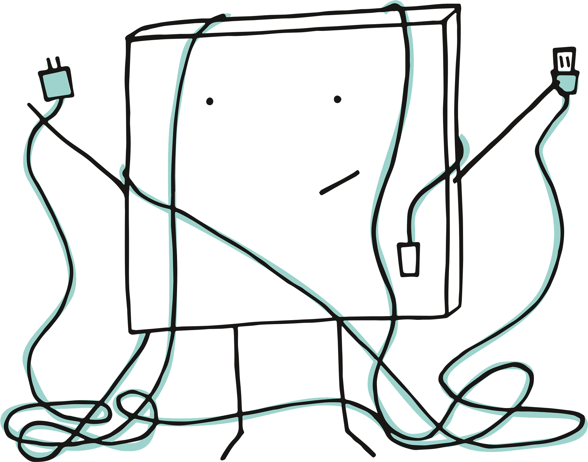
This is also why open-ended questions in this textbook should not be seen as “vague” or “subjective” by default. Their purpose is not to penalize you for not matching one exact phrase, but to encourage you to demonstrate that you understand the modelling logic well enough to express it in your own words. In our experience, this is one of the most important habits for later case studies, reports, presentations, and workplace discussions. A student who can explain why a coefficient should be interpreted conditionally, why a prediction interval is wider than a confidence interval, or why a certain model is inappropriate for a given response variable is showing a deeper level of statistical maturity than a student who can only identify the right formula. For that reason, the rationale accompanying open-ended exercises will often emphasize what a strong answer should contain, what kinds of claims would be too strong, and what kinds of wording choices reflect sound statistical communication.
Furthermore, the introductory exercises below are low-technical on purpose: no coding, minimal algebra, and a heavy emphasis on reading and reasoning. That is not because coding will not be essential throughout the cookbook, but because this introductory chapter aims to teach the “grammar” of regression before we start writing complete analyses, as we will do in subsequent chapters. Beginning in Chapter 3, you will encounter full coding-based case studies where you must carry out hands-on EDA, model setup, fitting, inference or prediction, diagnostics, and reporting, and you will see how the same conceptual moves show up repeatedly (e.g., choosing a probability distribution that matches the support of the outcome, interpreting coefficients on the correct scale, recognizing when a model is being asked to do something it cannot do, etc.). These early exercises are the scaffolding that makes those later case studies feel structured rather than overwhelming.
1.7.1 Supervised Learning and Regression Analysis
Question 1.1
Multiple Choice
A tutoring platform wants to use previous quiz score, topic area, and whether hints were used to predict the time a student will spend on a new practice problem. Which statement best matches the chapter’s notion of supervised learning?
A. Learning the joint distribution of the predictors with no labelled outcome.
B. Learning a mapping from observed features to a labelled response using paired observations.
C. Learning causal effects only through randomized experiments.
D. Learning a clustering structure among students without a target variable.
Answer 1.1
Click here to reveal the answer!
Correct answer: B.
Rationale:
Supervised learning uses labelled observations, meaning paired inputs and outputs such as feature vectors and their corresponding responses. The goal is to learn a rule or model that maps the observed features to the response. The other options either describe unsupervised settings or impose goals that are not part of the chapter’s general definition.
Question 1.2
Open-ended Question
A hospital quality-improvement team wants to model patient recovery time using age, procedure type, baseline severity, and discharge support. Explain why it is useful to think about a probability model for \(Y \mid \mathbf{x}\) rather than only about one predicted recovery time for each patient.
Answer 1.2
Click here to reveal the answer!
Answer:
A probability model for \(Y \mid \mathbf{x}\) is useful because patients with the same recorded features can still recover at different speeds. The model therefore captures not only a typical or expected recovery time, but also the variability around that expectation. This matters because healthcare decisions often depend on uncertainty, not just point predictions. It also forces the analyst to think carefully about whether the model assumptions match the support and behaviour of the response.
Question 1.3
True or False
In this chapter, regression analysis is presented as something that can support both explanation and prediction.
Answer 1.3
Click here to reveal the answer!
Correct answer: True.
Rationale:
A major theme of Chapter 1 is that regression analysis can support both inferential and predictive inquiries. The same broad modelling framework can be used for explanation, prediction, or a mixture of both, although the workflow emphasis changes depending on the primary goal.
Question 1.4
Multiple Choice
A data scientist says:
“The response variable is just the column that happens to be last in the spreadsheet.”
Which statement from Chapter 1 best corrects that idea?
A. The response variable is always numeric.
B. The response variable is the main outcome we want to explain, model, or predict.
C. The response variable is the same thing as the error term.
D. The response variable is the set of all explanatory variables.
Answer 1.4
Click here to reveal the answer!
Correct answer: B.
Rationale:
The chapter defines the response variable conceptually, not by spreadsheet position. It is the main outcome or quantity of interest whose behaviour we want to explain, model, or predict. The other options confuse the response with restrictions or objects that do not define it.
Question 1.5
True or False
An explanatory variable must always be continuous in order to be used in regression analysis.
Answer 1.5
Click here to reveal the answer!
Correct answer: False.
Rationale:
This chapter explicitly notes that explanatory variables can be quantitative or categorical. They are not restricted to continuous numerical inputs. What matters is that they help explain, describe, or predict the response under the regression model.
Question 1.6
Open-ended Question
A learning-analytics team says:
“If our model predicts course completion well, then there is no need to care about interpretation.”
Critique the above statement using the chapter’s distinction between predictive and inferential goals.
Answer 1.6
Click here to reveal the answer!
Answer:
That statement confuses two related, but different goals. A model can predict well and still be a poor tool for interpretation if its structure, coefficients, or assumptions do not support meaningful substantive conclusions. This chapter distinguishes predictive goals, which emphasize out-of-sample performance, from inferential goals, which emphasize associations and uncertainty about model quantities. In practice, both goals may matter, but success in one does not automatically guarantee success in the other.
Question 1.7
Multiple Choice
Suppose we are working in the applied housing setting from this chapter, where the response variable is the sale price of a house and the explanatory variables include features such as square footage, number of bedrooms, school distance, and neighbourhood type (see Equation 1.4). In the notation of this housing example, we write the explanatory-variable information for an observation generically as \(\mathbf{x}\) and the response as \(Y\).
Which expression best matches the main probabilistic object that regression analysis tries to model in this case?
A. \(\mathbf{X} \mid Y\)
B. \(Y \mid \mathbf{x}\)
C. \(\varepsilon \mid \beta_1\)
D. \(\mathbf{x} \mid \varepsilon\)
Answer 1.7
Click here to reveal the answer!
Correct answer: B.
Rationale:
A core message of this chapter is that regression analysis models the behaviour of the response conditional on the explanatory variables, namely \[Y \mid \mathbf{x}.\]
In the housing example, this means we are modelling the distribution of sale price given the observed house features. Since the Chapter 1 worked example uses OLS for a continuous response, the model is being used to describe how the conditional behaviour of housing sale price changes with the explanatory variables under an OLS framework. The other options either reverse the conditioning direction or focus on quantities that are not the main modelling target of regression analysis.
Question 1.8
True or False
A probability model can still be useful even when the main goal is prediction.
Answer 1.8
Click here to reveal the answer!
Correct answer: True.
Rationale:
Even when prediction is the main goal, a probability model helps clarify the support of the response, the assumptions on variability, and the meaning of predictive uncertainty. This chapter explicitly argues that probabilistic modelling remains useful in predictive settings.
Question 1.9
Open-ended Question
A school administrator has never taken statistics and asks you to explain the difference between a response variable and an explanatory variable. Use the context of predicting student absenteeism to answer this.
Answer 1.9
Click here to reveal the answer!
Answer:
In a student-absenteeism example, the response variable would be the outcome we care about most, such as the number of days a student misses school. The explanatory variables would be characteristics we think may help explain or predict that outcome, such as prior attendance, travel distance, school type, or household information. A regression model asks how the response tends to change as those explanatory variables vary. So the response is the main target, and the explanatory variables are the inputs used to understand or predict it.
Question 1.10
Multiple Choice
Which statement best matches the relationship between supervised learning and regression analysis in this cookbook?
A. They are unrelated topics.
B. Supervised learning is broader, and regression analysis is treated as a probabilistic modelling approach within that broader setting.
C. Regression analysis is only about hypothesis tests.
D. Supervised learning is only about unsupervised pattern discovery.
Answer 1.10
Click here to reveal the answer!
Correct answer: B.
Rationale:
This chapter presents supervised learning as the broader labelled-learning framework. Regression analysis sits within that broader setting, but emphasizes probability models, uncertainty, and interpretation. The other options contradict the chapter’s main conceptual framing.
Question 1.11
True or False
The same response variable can sometimes be approached differently depending on whether the main goal is inference or prediction.
Answer 1.11
Click here to reveal the answer!
Correct answer: True.
Rationale:
This chapter repeatedly emphasizes that the workflow flavour matters. Even for the same response variable, inferential and predictive goals can lead to different emphases in data splitting, model assessment, and interpretation.
Question 1.12
Open-ended Question
A manager says:
“If we already have the fitted values \(\hat{y}\), then we do not need a probability model.”
Explain why the above statement is too narrow for a view of regression analysis.
Answer 1.12
Click here to reveal the answer!
Answer:
That is too narrow because fitted values \(\hat{y}\) describe only one part of what a regression model provides. A probability model also tells us how the response varies around those fitted values, what support the outcome should have, and how to think about uncertainty in both inference and prediction. Without that probabilistic layer, we lose much of the interpretation and uncertainty framework that makes regression analysis useful. The chapter stresses that regression is more than just generating point predictions.
1.7.2 The Data Science Workflow
Question 1.13
Open-ended Question
A municipal transportation team wants to study average weekday bus delay on major routes. An analyst immediately fits a regression model using route type, time of day, rainfall, and driver experience, but the team later realizes that they had never clearly decided whether the real goal was to explain what is associated with delay or to predict next week’s delays.
Explain why this is a study design problem rather than just a modelling inconvenience. In your answer, describe how the lack of a clear inquiry could affect later stages of the workflow.
Answer 1.13
Click here to reveal the answer!
Answer:
This is a study design problem because the team never clarified the main inquiry before modelling. If the goal is inferential, the analysis should emphasize associations, uncertainty, and how the fitted coefficients are interpreted conditionally on the other variables. If the goal is predictive, the analysis should emphasize out-of-sample performance, protected testing data, and predictive accuracy on new observations. Without that distinction, later decisions about data splitting, model assessment, and how results should be communicated can become misaligned with the actual practical goal. The data science workflow is designed to prevent exactly this kind of confusion by forcing the analyst to define the question first.
Question 1.14
Multiple Choice
A health-policy team is studying whether a new discharge protocol is associated with shorter hospital stays. They have already wrangled the data and fitted an initial regression model. Which workflow stage should come next if they want to check whether the fitted model appears adequate before interpreting coefficients or reporting predictions?
A. Storytelling
B. Goodness of fit
C. Study design
D. Results
Answer 1.14
Click here to reveal the answer!
Correct answer: B.
Rationale:
Once a model has been fit, the next stage is goodness of fit. This is where the analyst checks diagnostic plots, formal tests when relevant, and the overall adequacy of the model before moving on to formal results and storytelling. Option A comes later. Option C should have happened earlier. Option D comes after goodness of fit, not before it.
Question 1.15
True or False
In the workflow presented in this chapter, it is acceptable in a predictive inquiry to re-estimate the regression model on the testing set if doing so slightly improves predictive accuracy.
Answer 1.15
Click here to reveal the answer!
Correct answer: False.
Rationale:
Re-estimating the predictive model on the testing set would introduce data leakage and undermine the honesty of the final out-of-sample assessment. In the predictive branch, the model is trained on the training set and then evaluated on the testing set without being re-fit there. Otherwise, the testing set stops being a protected benchmark.
Question 1.16
Multiple Choice
A retail analytics team has created several plots comparing monthly store revenue across regions, as well as histograms and summary statistics for customer traffic. Which workflow stage are they most clearly working in?
A. Exploratory data analysis
B. Results
C. Estimation
D. Storytelling
Answer 1.16
Click here to reveal the answer!
Correct answer: A.
Rationale:
Plots, summary statistics, and visual comparisons of the observed data belong most naturally to exploratory data analysis (EDA). EDA helps reveal broad patterns, variability, unusual observations, and possible modelling directions before the formal fitting stage begins.
Question 1.17
Open-ended Question
A capstone team models wait times for specialist appointments. Their fitted regression model gives a tidy coefficient table, and one student says:
“Great, we’re done.”
Explain why the above statement is incomplete according to the workflow developed in this chapter.
Answer 1.17
Click here to reveal the answer!
Answer:
That statement is incomplete because a coefficient table is only part of the results stage, not the full workflow. Before results, the team still needs to make sure the model passed the relevant goodness-of-fit checks so that the coefficients and intervals are interpretable in a defensible way. After results, they still need storytelling, where the model output is translated into a clear message for stakeholders such as clinicians or administrators. The workflow is meant to move from a practical question to a defensible conclusion, not just to a table of estimates.
Question 1.18
True or False
In the inferential branch described in this chapter, the testing set can still play a role even though testing sets are often associated with prediction.
Answer 1.18
Click here to reveal the answer!
Correct answer: True.
Rationale:
In this chapter’s workflow, the testing set can also serve a role in the inferential branch by helping reduce the risk of double dipping after the training set has already supported earlier exploratory and modelling steps. This is a deliberate workflow design choice emphasized in Chapter 1.
Question 1.19
Multiple Choice
A team is comparing three alternative predictive specifications for housing sale price before deciding which one to carry forward. Which subset of the data is most naturally tied to that comparison step?
A. Validation set
B. Testing set
C. Only the response variable
D. Storytelling notes
Answer 1.19
Click here to reveal the answer!
Correct answer: A.
Rationale:
The validation set is the most natural subset for comparing candidate predictive specifications before a final model is chosen. The training set is used to fit those candidate models, while the testing set should remain protected for a final out-of-sample assessment.
Question 1.20
Open-ended Question
A nonprofit is analyzing the effect of outreach intensity on donor response while also wanting a prediction tool for next quarter’s campaign. Explain why this chapter’s workflow can be better viewed as iterative rather than purely linear. Give one concrete example of when the team might need to go back to an earlier stage.
Answer 1.20
Click here to reveal the answer!
Answer:
This chapter’s workflow is useful as a sequence, but in practice it is often iterative because later stages can reveal problems that force the analyst to revisit earlier decisions. For example, the goodness-of-fit stage may reveal strong residual patterns, influential points, or poor predictive performance, which could send the team back to EDA or data modelling. That does not mean the workflow failed; it means the workflow is doing its job by revealing where the current model is inadequate.
Question 1.21
True or False
The storytelling stage is mainly about rewriting the coefficient table in simpler words, with no real need to reconnect to the original applied question.
Answer 1.21
Click here to reveal the answer!
Correct answer: False.
Rationale:
Storytelling is broader than simplifying technical output. It reconnects the model-based findings to the original applied question, the intended audience, and the practical meaning of the inferential or predictive results. A simple paraphrase of a coefficient table would not be enough.
Question 1.22
Multiple Choice
A school district analyst has already completed EDA and now needs to specify a regression formula for absenteeism using prior attendance, household distance, and school type. Which workflow stage is this most closely associated with?
A. Storytelling
B. Data modelling
C. Goodness of fit
D. Study design
Answer 1.22
Click here to reveal the answer!
Correct answer: B.
Rationale:
Specifying the regression formula and deciding which terms should enter the model belong to the data modelling stage. Study design comes earlier, goodness of fit comes later, and storytelling happens only after organized results have been obtained.
Question 1.23
Open-ended Question
A public-health agency fitted a predictive regression model for emergency room demand and reported only a training-set \(R^2\). Explain why this is not enough for the predictive branch of the workflow in this chapter.
Answer 1.23
Click here to reveal the answer!
Answer:
A training-set \(R^2\) is only an in-sample summary, so it does not tell us directly how well the model performs on unseen data. In the predictive branch, the chapter emphasizes that the main goal is generalization, which is why the trained model must be evaluated on a protected testing set. Metrics such as RMSE, MAE, and test-set \(R^2\) are more aligned with that goal. Reporting only a training-set fit summary risks overstating predictive quality.
Question 1.24
True or False
This chapter’s workflow can still be useful even when the analyst needs to revisit earlier stages after seeing model diagnostics.
Answer 1.24
Click here to reveal the answer!
Correct answer: True.
Rationale:
The workflow is meant to organize reasoning, not to prohibit revision. In practice, diagnostics and results often expose issues that require revisiting EDA, data wrangling, or model specification. This is one reason the chapter emphasizes the workflow as structured but still flexible.
1.7.3 Mind Map of Regression Analysis
Question 1.25
Multiple Choice
A fintech team wants to model the proportion of a loan that was repaid, so the response is continuous and lies between 0 and 1. According to the mind map from Figure 1.18, which class of regression models should they consider first?
A. Gamma regression
B. Beta regression
C. Classical Poisson regression
D. Binary logistic regression
Answer 1.25
Click here to reveal the answer!
Correct answer: B.
Rationale:
The mind map places Beta regression under the continuous-outcome branch for responses bounded between 0 and 1. That makes it the most natural first candidate among the options given.
Question 1.26
Open-ended Question
A hospital operations team wants to model patient length of stay, measured in days and strictly positive. Explain how the regression mind map (from Figure 1.18) would guide the team away from automatically defaulting to OLS.
Answer 1.26
Click here to reveal the answer!
Answer:
The mind map first asks the analyst to think about the nature of the response variable rather than to default immediately to OLS. Since length of stay is positive and often right-skewed, the team should ask whether a model designed for nonnegative continuous outcomes would be more appropriate than one built around an unbounded continuous response. That logic points toward alternatives such as Gamma regression or survival-type models, depending on the context. The point is not that OLS is always wrong, but that model choice should begin with the support and behaviour of the outcome.
Question 1.27
True or False
The mind map from Figure 1.18 suggests that OLS should be used for every continuous outcome because it is introduced first in this cookbook.
Answer 1.27
Click here to reveal the answer!
Correct answer: False.
Rationale:
Although OLS is foundational, the mind map shows that different kinds of continuous outcomes may require different models. Positive outcomes, bounded outcomes, and survival times motivate alternatives to OLS. This chapter emphasizes that model choice should match the nature of the response variable.
Question 1.28
Multiple Choice
A city services team wants to model the number of pothole complaints per week. From this chapter’s mind map in Figure 1.18, they first recognize that this is a count outcome, so they focus on the branch of regression models designed for counts. They also learn from a preliminary data summary that the variation in weekly complaint counts appears to be larger than what would be expected under a simple Poisson-style count setting.
Based on the mind map, which model would be the most natural next candidate to consider?
A. Classical Poisson regression
B. Negative Binomial regression
C. Multinomial logistic regression
D. Beta regression
Answer 1.28
Click here to reveal the answer!
Correct answer: B.
Rationale:
The chapter’s mind map first guides us by the type of response variable. Since the outcome is the number of pothole complaints, we are in the discrete count-outcome branch. The question then adds an extra clue: the counts show more variability than a simpler Poisson-style setting would suggest. In the mind map, that pushes us away from classical Poisson regression and toward Negative Binomial regression, which is the model associated with overdispersed count data. The other options are for different kinds of responses: Multinomial logistic regression is for nominal categorical outcomes, and Beta regression is for continuous outcomes between 0 and 1.
Question 1.29
True or False
According to the mind map in Figure 1.18, all discrete outcomes are count outcomes.
Answer 1.29
Click here to reveal the answer!
Correct answer: False.
Rationale:
The discrete-outcome side of the mind map includes binary outcomes, count outcomes, and categorical outcomes (nominal and ordinal). Counts are only one part of the discrete-outcome family.
Question 1.30
Open-ended Question
A student says:
“The mind map, from Figure 1.18, is basically just a list of chapters.”
Explain why the above statement misses the main purpose of Figure 1.18.
Answer 1.30
Click here to reveal the answer!
Answer:
That misses the main purpose because the mind map is not only a table of contents; it is also a conceptual guide to how model choice depends on the response variable. It shows that regression is a toolbox rather than a single method, and that different outcome types lead to different probability models and regression frameworks. The figure helps the reader connect a modelling problem to the support and behaviour of the response variable. So it organizes ideas, not just chapters.
Question 1.31
Multiple Choice
A survey research team wants to model a response with ordered categories such as “low”, “medium”, and “high” satisfaction. Which model in the mind map, from Figure 1.18, is most directly associated with that setting?
A. Multinomial logistic regression
B. Ordinal logistic regression
C. Gamma regression
D. Classical Poisson regression
Answer 1.31
Click here to reveal the answer!
Correct answer: B.
Rationale:
The mind map places Ordinal logistic regression under the branch for ordinal outcomes. Multinomial logistic regression is for nominal categories, not ordered ones.
Question 1.32
True or False
One of the main messages of the mind map, from Figure 1.18, is that model choice should be driven mainly by the support and type of the response variable.
Answer 1.32
Click here to reveal the answer!
Correct answer: True.
Rationale:
The mind map is organized precisely to emphasize that model choice should start with the nature of the response variable. The support of the outcome helps determine which probability models and regression frameworks are reasonable.
Question 1.33
Open-ended Question
A clinical research team is comparing OLS and Gamma regression for modelling a positive continuous medical cost outcome. Explain how the logic of the mind map, from Figure 1.18, helps frame that comparison.
Answer 1.33
Click here to reveal the answer!
Answer:
The mind map suggests beginning with the support and behaviour of the response, not with brand familiarity. OLS is associated with an unbounded continuous outcome, while Gamma regression is associated with a nonnegative continuous outcome, especially when the response is positive and right-skewed. So the comparison is not just about which method is more advanced, but about which one better respects the structure of the cost variable. This is exactly the kind of model-selection reasoning the mind map is meant to encourage.
Question 1.34
Multiple Choice
Which statement best matches the chapter’s “toolbox” view of regression analysis?
A. Every regression problem should start with OLS and stay there unless software errors occur.
B. Regression analysis is a collection of models, and the analyst chooses among them by matching the outcome type and modelling goal.
C. Discrete-outcome models are always better than continuous-outcome models.
D. Once the data are collected, the choice of model is arbitrary.
Answer 1.34
Click here to reveal the answer!
Correct answer: B.
Rationale:
This chapter presents regression as a toolbox of models rather than a single technique. Model choice depends on the response type, probability-model assumptions, and inferential or predictive goal. The other options contradict this central idea.
Question 1.35
Open-ended Question
A policy team wants to model whether a person renewed a licence: yes or no. Explain how the mind map (from Figure 1.18) would guide them away from treating this as an OLS problem.
Answer 1.35
Click here to reveal the answer!
Answer:
The mind map would first classify the response as discrete and more specifically as binary. That immediately suggests looking toward the binary-outcome branch rather than the continuous-outcome branch where OLS lives. In the figure, this points toward binary logistic regression when the data are ungrouped. The broader lesson is that the response type should guide model choice before we think about convenience or habit.
Question 1.36
True or False
The mind map, from Figure 1.18, implies that the thirteen models covered in the book exhaust all of regression analysis in the statistical literature.
Answer 1.36
Click here to reveal the answer!
Correct answer: False.
Rationale:
This chapter explicitly notes that the statistical literature extends well beyond the thirteen models covered in the book. The mind map organizes a strong foundational set of models, but it does not claim to exhaust the field.
In later chapters, especially when we introduce matrix notation and the design matrix more formally, we may use an augmented version of this vector that includes a leading \(1\) for the regression intercept \(\beta_0.\)↩︎